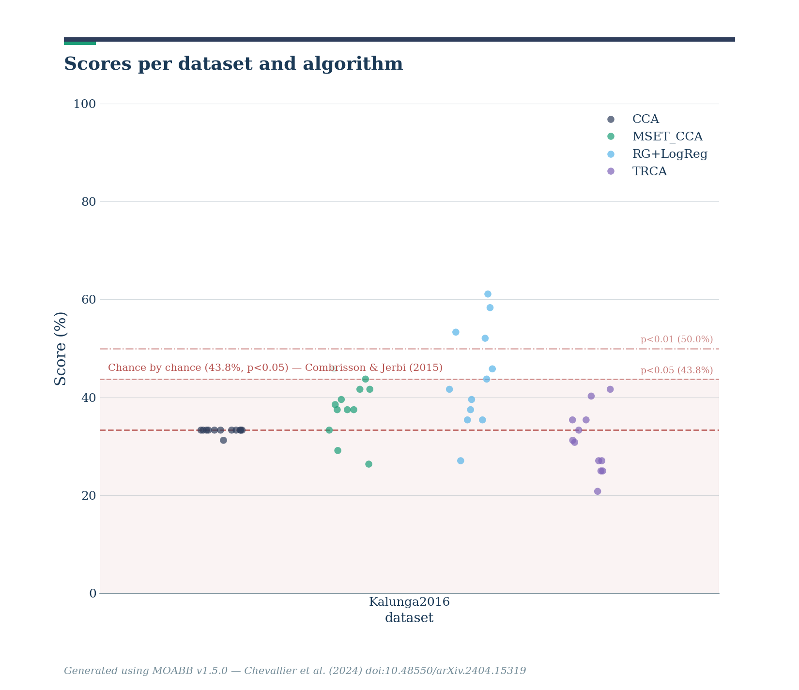

Note
Go to the end to download the full example code.
Cross-Subject SSVEP#
This example shows how to perform a cross-subject analysis on an SSVEP dataset. We will compare four pipelines :
Riemannian Geometry
CCA
TRCA
MsetCCA
We will use the SSVEP paradigm, which uses the AUC as metric.
# Authors: Sylvain Chevallier <sylvain.chevallier@uvsq.fr>
#
# License: BSD (3-clause)
import warnings
import matplotlib.pyplot as plt
import pandas as pd
from pyriemann.estimation import Covariances
from pyriemann.tangentspace import TangentSpace
from sklearn.linear_model import LogisticRegression
from sklearn.pipeline import make_pipeline
import moabb
import moabb.analysis.plotting as moabb_plt
from moabb.analysis.chance_level import chance_by_chance
from moabb.datasets import Kalunga2016
from moabb.evaluations import CrossSubjectEvaluation
from moabb.paradigms import SSVEP, FilterBankSSVEP
from moabb.pipelines import SSVEP_CCA, SSVEP_TRCA, ExtendedSSVEPSignal, SSVEP_MsetCCA
warnings.simplefilter(action="ignore", category=FutureWarning)
warnings.simplefilter(action="ignore", category=RuntimeWarning)
moabb.set_log_level("info")
Loading Dataset#
We will load the data from all 12 subjects of the SSVEP_Exo dataset
and compare four algorithms on this set. One of the algorithms could only
process class associated with a stimulation frequency, we will thus drop
the resting class. As the resting class is the last defined class, picking
the first three classes (out of four) allows to focus only on the stimulation
frequency.
Choose Paradigm#
We define the paradigms (SSVEP, SSVEP TRCA, SSVEP MsetCCA, and FilterBankSSVEP) and
use the dataset Kalunga2016. All 3 SSVEP paradigms applied a bandpass filter (10-42 Hz) on
the data, which include all stimuli frequencies and their first harmonics,
while the FilterBankSSVEP paradigm uses as many bandpass filters as
there are stimulation frequencies (here 3). For each stimulation frequency
the EEG is filtered with a 1 Hz-wide bandpass filter centered on the
frequency. This results in n_classes copies of the signal, filtered for each
class, as used in the filterbank motor imagery paradigms.
paradigm = SSVEP(fmin=10, fmax=42, n_classes=3)
paradigm_TRCA = SSVEP(fmin=10, fmax=42, n_classes=3)
paradigm_MSET_CCA = SSVEP(fmin=10, fmax=42, n_classes=3)
paradigm_fb = FilterBankSSVEP(filters=None, n_classes=3)
2026-03-27 08:38:17,118 WARNING MainThread moabb.paradigms.ssvep Choosing the first 3 classes from all possible events
2026-03-27 08:38:17,118 WARNING MainThread moabb.paradigms.ssvep Choosing the first 3 classes from all possible events
2026-03-27 08:38:17,118 WARNING MainThread moabb.paradigms.ssvep Choosing the first 3 classes from all possible events
2026-03-27 08:38:17,118 WARNING MainThread moabb.paradigms.ssvep Choosing the first 3 classes from all possible events
Classes are defined by the frequency of the stimulation, here we use the first three frequencies of the dataset, 13, 17, and 21 Hz. The evaluation function uses a LabelEncoder, transforming them to 0, 1, and 2.
Create Pipelines#
Pipelines must be a dict of sklearn pipeline transformer. The first pipeline uses Riemannian geometry, by building an extended covariance matrices from the signal filtered around the considered frequency and applying a logistic regression in the tangent plane. The second pipeline relies on the above defined CCA classifier. The third pipeline relies on the TRCA algorithm, and the fourth uses the MsetCCA algorithm. Both CCA based methods (i.e. CCA and MsetCCA) used 3 CCA components.
pipelines_fb = {}
pipelines_fb["RG+LogReg"] = make_pipeline(
ExtendedSSVEPSignal(),
Covariances(estimator="lwf"),
TangentSpace(),
LogisticRegression(solver="lbfgs"),
)
pipelines = {}
pipelines["CCA"] = make_pipeline(SSVEP_CCA(n_harmonics=2))
pipelines_TRCA = {}
pipelines_TRCA["TRCA"] = make_pipeline(SSVEP_TRCA(n_fbands=3))
pipelines_MSET_CCA = {}
pipelines_MSET_CCA["MSET_CCA"] = make_pipeline(SSVEP_MsetCCA())
Evaluation#
The evaluation will return a DataFrame containing an accuracy score for each subject / session of the dataset, and for each pipeline.
Results are saved into the database, so that if you add a new pipeline, it will not run again the evaluation unless a parameter has changed. Results can be overwritten if necessary.
overwrite = True # set to True if we want to overwrite cached results
evaluation = CrossSubjectEvaluation(
paradigm=paradigm, datasets=dataset, overwrite=overwrite
)
results = evaluation.process(pipelines)
Downloading data from 'https://zenodo.org/record/2392979/files/subject04_run1_raw.fif' to file '/home/runner/work/moabb/moabb/mne_data/MNE-ssvepexo-data/zenodo/2392979/subject04_run1_raw.fif'.
/home/runner/work/moabb/moabb/.venv/lib/python3.10/site-packages/urllib3/connectionpool.py:1097: InsecureRequestWarning: Unverified HTTPS request is being made to host 'zenodo.org'. Adding certificate verification is strongly advised. See: https://urllib3.readthedocs.io/en/latest/advanced-usage.html#tls-warnings
warnings.warn(
/home/runner/work/moabb/moabb/.venv/lib/python3.10/site-packages/urllib3/connectionpool.py:1097: InsecureRequestWarning: Unverified HTTPS request is being made to host 'zenodo.org'. Adding certificate verification is strongly advised. See: https://urllib3.readthedocs.io/en/latest/advanced-usage.html#tls-warnings
warnings.warn(
0%| | 0.00/2.29M [00:00<?, ?B/s]
1%|▏ | 12.3k/2.29M [00:00<00:35, 64.0kB/s]
2%|▋ | 37.9k/2.29M [00:00<00:20, 113kB/s]
4%|█▌ | 92.2k/2.29M [00:00<00:10, 205kB/s]
5%|██ | 125k/2.29M [00:00<00:10, 200kB/s]
9%|███▍ | 199k/2.29M [00:00<00:07, 283kB/s]
12%|████▊ | 281k/2.29M [00:01<00:05, 351kB/s]
17%|██████▋ | 395k/2.29M [00:01<00:04, 425kB/s]
21%|████████ | 476k/2.29M [00:01<00:03, 474kB/s]
26%|██████████ | 591k/2.29M [00:01<00:03, 500kB/s]
30%|███████████▋ | 689k/2.29M [00:01<00:03, 523kB/s]
36%|█████████████▉ | 820k/2.29M [00:01<00:02, 595kB/s]
39%|███████████████▎ | 902k/2.29M [00:02<00:02, 561kB/s]
46%|█████████████████▋ | 1.06M/2.29M [00:02<00:01, 676kB/s]
53%|████████████████████ | 1.21M/2.29M [00:02<00:01, 730kB/s]
59%|██████████████████████▎ | 1.34M/2.29M [00:02<00:01, 741kB/s]
62%|███████████████████████▍ | 1.42M/2.29M [00:02<00:01, 652kB/s]
65%|████████████████████████▋ | 1.49M/2.29M [00:02<00:01, 585kB/s]
69%|██████████████████████████ | 1.57M/2.29M [00:03<00:01, 553kB/s]
72%|███████████████████████████▍ | 1.65M/2.29M [00:03<00:01, 531kB/s]
78%|█████████████████████████████▌ | 1.78M/2.29M [00:03<00:00, 603kB/s]
83%|███████████████████████████████▍ | 1.90M/2.29M [00:03<00:00, 624kB/s]
88%|█████████████████████████████████▌ | 2.03M/2.29M [00:03<00:00, 666kB/s]
94%|███████████████████████████████████▊ | 2.16M/2.29M [00:03<00:00, 697kB/s]
0%| | 0.00/2.29M [00:00<?, ?B/s]
100%|█████████████████████████████████████| 2.29M/2.29M [00:00<00:00, 18.3GB/s]
SHA256 hash of downloaded file: 0b62acb6716f9f56880391a2b2b58f262e6c80a31719d11f9b0012bfdf164d94
Use this value as the 'known_hash' argument of 'pooch.retrieve' to ensure that the file hasn't changed if it is downloaded again in the future.
Downloading data from 'https://zenodo.org/record/2392979/files/subject04_run2_raw.fif' to file '/home/runner/work/moabb/moabb/mne_data/MNE-ssvepexo-data/zenodo/2392979/subject04_run2_raw.fif'.
/home/runner/work/moabb/moabb/.venv/lib/python3.10/site-packages/urllib3/connectionpool.py:1097: InsecureRequestWarning: Unverified HTTPS request is being made to host 'zenodo.org'. Adding certificate verification is strongly advised. See: https://urllib3.readthedocs.io/en/latest/advanced-usage.html#tls-warnings
warnings.warn(
/home/runner/work/moabb/moabb/.venv/lib/python3.10/site-packages/urllib3/connectionpool.py:1097: InsecureRequestWarning: Unverified HTTPS request is being made to host 'zenodo.org'. Adding certificate verification is strongly advised. See: https://urllib3.readthedocs.io/en/latest/advanced-usage.html#tls-warnings
warnings.warn(
0%| | 0.00/2.06M [00:00<?, ?B/s]
1%|▏ | 12.3k/2.06M [00:00<00:29, 68.6kB/s]
2%|▋ | 39.9k/2.06M [00:00<00:15, 131kB/s]
5%|█▊ | 97.3k/2.06M [00:00<00:08, 239kB/s]
8%|███ | 159k/2.06M [00:00<00:06, 302kB/s]
11%|████▎ | 229k/2.06M [00:00<00:05, 360kB/s]
14%|█████▍ | 286k/2.06M [00:00<00:04, 363kB/s]
19%|███████▎ | 385k/2.06M [00:01<00:03, 454kB/s]
22%|████████▌ | 451k/2.06M [00:01<00:03, 450kB/s]
27%|██████████▍ | 548k/2.06M [00:01<00:03, 504kB/s]
34%|█████████████▏ | 695k/2.06M [00:01<00:02, 646kB/s]
40%|███████████████▋ | 826k/2.06M [00:01<00:01, 708kB/s]
45%|█████████████████▌ | 925k/2.06M [00:01<00:01, 687kB/s]
48%|██████████████████▊ | 994k/2.06M [00:02<00:01, 614kB/s]
53%|████████████████████ | 1.09M/2.06M [00:02<00:01, 613kB/s]
59%|██████████████████████▍ | 1.22M/2.06M [00:02<00:01, 683kB/s]
63%|███████████████████████▊ | 1.29M/2.06M [00:02<00:01, 614kB/s]
66%|████████████████████████▉ | 1.35M/2.06M [00:02<00:01, 553kB/s]
70%|██████████████████████████▍ | 1.43M/2.06M [00:02<00:01, 548kB/s]
77%|█████████████████████████████▏ | 1.58M/2.06M [00:02<00:00, 671kB/s]
81%|██████████████████████████████▋ | 1.66M/2.06M [00:03<00:00, 630kB/s]
85%|████████████████████████████████▏ | 1.74M/2.06M [00:03<00:00, 602kB/s]
89%|█████████████████████████████████▉ | 1.84M/2.06M [00:03<00:00, 614kB/s]
93%|███████████████████████████████████▍ | 1.92M/2.06M [00:03<00:00, 591kB/s]
97%|████████████████████████████████████▋ | 1.99M/2.06M [00:03<00:00, 542kB/s]
0%| | 0.00/2.06M [00:00<?, ?B/s]
100%|█████████████████████████████████████| 2.06M/2.06M [00:00<00:00, 13.8GB/s]
SHA256 hash of downloaded file: cb9013ee0eb75837bdfc5840070130c6e34345b333517243359201eadb8baffc
Use this value as the 'known_hash' argument of 'pooch.retrieve' to ensure that the file hasn't changed if it is downloaded again in the future.
Downloading data from 'https://zenodo.org/record/2392979/files/subject05_run1_raw.fif' to file '/home/runner/work/moabb/moabb/mne_data/MNE-ssvepexo-data/zenodo/2392979/subject05_run1_raw.fif'.
/home/runner/work/moabb/moabb/.venv/lib/python3.10/site-packages/urllib3/connectionpool.py:1097: InsecureRequestWarning: Unverified HTTPS request is being made to host 'zenodo.org'. Adding certificate verification is strongly advised. See: https://urllib3.readthedocs.io/en/latest/advanced-usage.html#tls-warnings
warnings.warn(
/home/runner/work/moabb/moabb/.venv/lib/python3.10/site-packages/urllib3/connectionpool.py:1097: InsecureRequestWarning: Unverified HTTPS request is being made to host 'zenodo.org'. Adding certificate verification is strongly advised. See: https://urllib3.readthedocs.io/en/latest/advanced-usage.html#tls-warnings
warnings.warn(
0%| | 0.00/2.12M [00:00<?, ?B/s]
0%| | 5.12k/2.12M [00:00<01:18, 26.9kB/s]
2%|▋ | 36.9k/2.12M [00:00<00:17, 120kB/s]
4%|█▌ | 86.0k/2.12M [00:00<00:10, 201kB/s]
6%|██▍ | 132k/2.12M [00:00<00:08, 234kB/s]
10%|███▉ | 213k/2.12M [00:00<00:05, 329kB/s]
14%|█████▍ | 296k/2.12M [00:00<00:04, 391kB/s]
20%|███████▊ | 427k/2.12M [00:01<00:03, 529kB/s]
26%|██████████▏ | 557k/2.12M [00:01<00:02, 617kB/s]
38%|██████████████▊ | 803k/2.12M [00:01<00:01, 900kB/s]
46%|██████████████████ | 982k/2.12M [00:01<00:01, 965kB/s]
66%|████████████████████████▎ | 1.39M/2.12M [00:01<00:00, 1.45MB/s]
79%|█████████████████████████████ | 1.67M/2.12M [00:01<00:00, 1.53MB/s]
0%| | 0.00/2.12M [00:00<?, ?B/s]
100%|█████████████████████████████████████| 2.12M/2.12M [00:00<00:00, 9.81GB/s]
SHA256 hash of downloaded file: ce682ca6aedb88a61154f7ef0233ba27ccf59d6c87d58d37cd6bd240743a4bfd
Use this value as the 'known_hash' argument of 'pooch.retrieve' to ensure that the file hasn't changed if it is downloaded again in the future.
Downloading data from 'https://zenodo.org/record/2392979/files/subject05_run2_raw.fif' to file '/home/runner/work/moabb/moabb/mne_data/MNE-ssvepexo-data/zenodo/2392979/subject05_run2_raw.fif'.
/home/runner/work/moabb/moabb/.venv/lib/python3.10/site-packages/urllib3/connectionpool.py:1097: InsecureRequestWarning: Unverified HTTPS request is being made to host 'zenodo.org'. Adding certificate verification is strongly advised. See: https://urllib3.readthedocs.io/en/latest/advanced-usage.html#tls-warnings
warnings.warn(
/home/runner/work/moabb/moabb/.venv/lib/python3.10/site-packages/urllib3/connectionpool.py:1097: InsecureRequestWarning: Unverified HTTPS request is being made to host 'zenodo.org'. Adding certificate verification is strongly advised. See: https://urllib3.readthedocs.io/en/latest/advanced-usage.html#tls-warnings
warnings.warn(
0%| | 0.00/2.47M [00:00<?, ?B/s]
1%|▏ | 13.3k/2.47M [00:00<00:36, 67.8kB/s]
1%|▍ | 30.7k/2.47M [00:00<00:26, 90.7kB/s]
4%|█▍ | 97.3k/2.47M [00:00<00:10, 235kB/s]
7%|██▊ | 175k/2.47M [00:00<00:06, 334kB/s]
10%|███▉ | 247k/2.47M [00:00<00:05, 377kB/s]
15%|█████▊ | 372k/2.47M [00:00<00:04, 517kB/s]
20%|███████▊ | 492k/2.47M [00:01<00:03, 597kB/s]
29%|███████████ | 705k/2.47M [00:01<00:02, 838kB/s]
37%|██████████████▍ | 916k/2.47M [00:01<00:01, 997kB/s]
50%|██████████████████▋ | 1.24M/2.47M [00:01<00:00, 1.33MB/s]
65%|████████████████████████ | 1.60M/2.47M [00:01<00:00, 1.63MB/s]
83%|██████████████████████████████▊ | 2.06M/2.47M [00:01<00:00, 2.02MB/s]
0%| | 0.00/2.47M [00:00<?, ?B/s]
100%|█████████████████████████████████████| 2.47M/2.47M [00:00<00:00, 14.7GB/s]
SHA256 hash of downloaded file: 99ca9e3a9026bd2d2fed57c3d4a36780bc44fcefbe047cf183346db3331b1750
Use this value as the 'known_hash' argument of 'pooch.retrieve' to ensure that the file hasn't changed if it is downloaded again in the future.
Downloading data from 'https://zenodo.org/record/2392979/files/subject06_run1_raw.fif' to file '/home/runner/work/moabb/moabb/mne_data/MNE-ssvepexo-data/zenodo/2392979/subject06_run1_raw.fif'.
/home/runner/work/moabb/moabb/.venv/lib/python3.10/site-packages/urllib3/connectionpool.py:1097: InsecureRequestWarning: Unverified HTTPS request is being made to host 'zenodo.org'. Adding certificate verification is strongly advised. See: https://urllib3.readthedocs.io/en/latest/advanced-usage.html#tls-warnings
warnings.warn(
/home/runner/work/moabb/moabb/.venv/lib/python3.10/site-packages/urllib3/connectionpool.py:1097: InsecureRequestWarning: Unverified HTTPS request is being made to host 'zenodo.org'. Adding certificate verification is strongly advised. See: https://urllib3.readthedocs.io/en/latest/advanced-usage.html#tls-warnings
warnings.warn(
0%| | 0.00/2.71M [00:00<?, ?B/s]
0%| | 1.02k/2.71M [00:00<08:22, 5.39kB/s]
1%|▍ | 32.8k/2.71M [00:00<00:23, 113kB/s]
4%|█▍ | 98.3k/2.71M [00:00<00:10, 248kB/s]
6%|██▎ | 161k/2.71M [00:00<00:08, 308kB/s]
9%|███▋ | 253k/2.71M [00:00<00:06, 410kB/s]
13%|█████ | 356k/2.71M [00:00<00:04, 493kB/s]
16%|██████▎ | 443k/2.71M [00:01<00:04, 510kB/s]
22%|████████▍ | 590k/2.71M [00:01<00:03, 603kB/s]
26%|██████████ | 696k/2.71M [00:01<00:03, 627kB/s]
29%|███████████▍ | 795k/2.71M [00:01<00:03, 628kB/s]
33%|█████████████ | 908k/2.71M [00:01<00:02, 658kB/s]
36%|██████████████▏ | 990k/2.71M [00:01<00:02, 618kB/s]
39%|██████████████▊ | 1.06M/2.71M [00:02<00:02, 559kB/s]
44%|████████████████▌ | 1.19M/2.71M [00:02<00:02, 644kB/s]
46%|█████████████████▌ | 1.25M/2.71M [00:02<00:02, 578kB/s]
50%|██████████████████▉ | 1.35M/2.71M [00:02<00:02, 594kB/s]
55%|████████████████████▉ | 1.50M/2.71M [00:02<00:01, 699kB/s]
58%|█████████████████████▉ | 1.57M/2.71M [00:02<00:01, 625kB/s]
61%|███████████████████████ | 1.64M/2.71M [00:03<00:01, 586kB/s]
63%|███████████████████████▉ | 1.71M/2.71M [00:03<00:01, 537kB/s]
67%|█████████████████████████▌ | 1.82M/2.71M [00:03<00:01, 597kB/s]
70%|██████████████████████████▋ | 1.91M/2.71M [00:03<00:01, 575kB/s]
74%|████████████████████████████▎ | 2.02M/2.71M [00:03<00:01, 622kB/s]
77%|█████████████████████████████▍ | 2.10M/2.71M [00:03<00:01, 594kB/s]
80%|██████████████████████████████▎ | 2.17M/2.71M [00:03<00:01, 542kB/s]
83%|███████████████████████████████▌ | 2.25M/2.71M [00:04<00:00, 538kB/s]
87%|████████████████████████████████▉ | 2.35M/2.71M [00:04<00:00, 565kB/s]
92%|██████████████████████████████████▉ | 2.49M/2.71M [00:04<00:00, 652kB/s]
94%|███████████████████████████████████▊ | 2.56M/2.71M [00:04<00:00, 584kB/s]
97%|████████████████████████████████████▊ | 2.63M/2.71M [00:04<00:00, 535kB/s]
0%| | 0.00/2.71M [00:00<?, ?B/s]
100%|█████████████████████████████████████| 2.71M/2.71M [00:00<00:00, 23.1GB/s]
SHA256 hash of downloaded file: b2e66e124b9b796f5e24bed990d28841c7a0ab8149737af82a8ff953318179ec
Use this value as the 'known_hash' argument of 'pooch.retrieve' to ensure that the file hasn't changed if it is downloaded again in the future.
Downloading data from 'https://zenodo.org/record/2392979/files/subject06_run2_raw.fif' to file '/home/runner/work/moabb/moabb/mne_data/MNE-ssvepexo-data/zenodo/2392979/subject06_run2_raw.fif'.
/home/runner/work/moabb/moabb/.venv/lib/python3.10/site-packages/urllib3/connectionpool.py:1097: InsecureRequestWarning: Unverified HTTPS request is being made to host 'zenodo.org'. Adding certificate verification is strongly advised. See: https://urllib3.readthedocs.io/en/latest/advanced-usage.html#tls-warnings
warnings.warn(
/home/runner/work/moabb/moabb/.venv/lib/python3.10/site-packages/urllib3/connectionpool.py:1097: InsecureRequestWarning: Unverified HTTPS request is being made to host 'zenodo.org'. Adding certificate verification is strongly advised. See: https://urllib3.readthedocs.io/en/latest/advanced-usage.html#tls-warnings
warnings.warn(
0%| | 0.00/2.33M [00:00<?, ?B/s]
0%| | 1.02k/2.33M [00:00<06:37, 5.84kB/s]
2%|▋ | 41.0k/2.33M [00:00<00:15, 145kB/s]
4%|█▌ | 98.3k/2.33M [00:00<00:09, 243kB/s]
6%|██▍ | 143k/2.33M [00:00<00:08, 260kB/s]
10%|███▉ | 231k/2.33M [00:00<00:05, 367kB/s]
15%|█████▉ | 353k/2.33M [00:00<00:03, 505kB/s]
20%|███████▌ | 454k/2.33M [00:01<00:03, 549kB/s]
26%|██████████ | 601k/2.33M [00:01<00:02, 673kB/s]
32%|████████████▌ | 748k/2.33M [00:01<00:02, 754kB/s]
38%|███████████████ | 895k/2.33M [00:01<00:01, 810kB/s]
50%|██████████████████▋ | 1.17M/2.33M [00:01<00:01, 1.10MB/s]
59%|█████████████████████▊ | 1.37M/2.33M [00:01<00:00, 1.15MB/s]
75%|███████████████████████████▊ | 1.75M/2.33M [00:02<00:00, 1.53MB/s]
91%|█████████████████████████████████▍ | 2.11M/2.33M [00:02<00:00, 1.76MB/s]
0%| | 0.00/2.33M [00:00<?, ?B/s]
100%|█████████████████████████████████████| 2.33M/2.33M [00:00<00:00, 13.5GB/s]
SHA256 hash of downloaded file: 7022c4ef4650c05e9a04783118dd7e40d9ad022e598a15ae2566298620e6ee8f
Use this value as the 'known_hash' argument of 'pooch.retrieve' to ensure that the file hasn't changed if it is downloaded again in the future.
Downloading data from 'https://zenodo.org/record/2392979/files/subject07_run1_raw.fif' to file '/home/runner/work/moabb/moabb/mne_data/MNE-ssvepexo-data/zenodo/2392979/subject07_run1_raw.fif'.
/home/runner/work/moabb/moabb/.venv/lib/python3.10/site-packages/urllib3/connectionpool.py:1097: InsecureRequestWarning: Unverified HTTPS request is being made to host 'zenodo.org'. Adding certificate verification is strongly advised. See: https://urllib3.readthedocs.io/en/latest/advanced-usage.html#tls-warnings
warnings.warn(
/home/runner/work/moabb/moabb/.venv/lib/python3.10/site-packages/urllib3/connectionpool.py:1097: InsecureRequestWarning: Unverified HTTPS request is being made to host 'zenodo.org'. Adding certificate verification is strongly advised. See: https://urllib3.readthedocs.io/en/latest/advanced-usage.html#tls-warnings
warnings.warn(
0%| | 0.00/2.27M [00:00<?, ?B/s]
0%|▏ | 11.3k/2.27M [00:00<00:41, 54.1kB/s]
1%|▍ | 27.6k/2.27M [00:00<00:29, 77.0kB/s]
4%|█▋ | 97.3k/2.27M [00:00<00:09, 222kB/s]
6%|██▎ | 137k/2.27M [00:00<00:09, 227kB/s]
9%|███▍ | 199k/2.27M [00:00<00:07, 275kB/s]
12%|████▊ | 284k/2.27M [00:01<00:05, 350kB/s]
15%|█████▉ | 345k/2.27M [00:01<00:05, 355kB/s]
20%|███████▋ | 447k/2.27M [00:01<00:04, 432kB/s]
23%|█████████ | 529k/2.27M [00:01<00:03, 447kB/s]
29%|███████████▎ | 659k/2.27M [00:01<00:02, 545kB/s]
36%|█████████████▊ | 807k/2.27M [00:01<00:02, 638kB/s]
39%|███████████████▎ | 889k/2.27M [00:02<00:02, 592kB/s]
43%|████████████████▋ | 971k/2.27M [00:02<00:02, 558kB/s]
46%|█████████████████▎ | 1.04M/2.27M [00:02<00:02, 506kB/s]
52%|███████████████████▊ | 1.18M/2.27M [00:02<00:01, 612kB/s]
57%|█████████████████████▋ | 1.30M/2.27M [00:02<00:01, 631kB/s]
61%|███████████████████████▎ | 1.40M/2.27M [00:02<00:01, 615kB/s]
66%|████████████████████████▉ | 1.49M/2.27M [00:03<00:01, 604kB/s]
69%|██████████████████████████ | 1.56M/2.27M [00:03<00:01, 535kB/s]
72%|███████████████████████████▍ | 1.64M/2.27M [00:03<00:01, 517kB/s]
78%|█████████████████████████████▋ | 1.77M/2.27M [00:03<00:00, 593kB/s]
84%|███████████████████████████████▊ | 1.90M/2.27M [00:03<00:00, 646kB/s]
88%|█████████████████████████████████▍ | 2.00M/2.27M [00:03<00:00, 626kB/s]
93%|███████████████████████████████████▍ | 2.12M/2.27M [00:04<00:00, 639kB/s]
99%|█████████████████████████████████████▌| 2.25M/2.27M [00:04<00:00, 675kB/s]
0%| | 0.00/2.27M [00:00<?, ?B/s]
100%|█████████████████████████████████████| 2.27M/2.27M [00:00<00:00, 13.3GB/s]
SHA256 hash of downloaded file: 199c5ab96fb6830daf637c67a85abb5bfa9c3fdf2e7c5600d9a0ff9a6483c100
Use this value as the 'known_hash' argument of 'pooch.retrieve' to ensure that the file hasn't changed if it is downloaded again in the future.
Downloading data from 'https://zenodo.org/record/2392979/files/subject07_run2_raw.fif' to file '/home/runner/work/moabb/moabb/mne_data/MNE-ssvepexo-data/zenodo/2392979/subject07_run2_raw.fif'.
/home/runner/work/moabb/moabb/.venv/lib/python3.10/site-packages/urllib3/connectionpool.py:1097: InsecureRequestWarning: Unverified HTTPS request is being made to host 'zenodo.org'. Adding certificate verification is strongly advised. See: https://urllib3.readthedocs.io/en/latest/advanced-usage.html#tls-warnings
warnings.warn(
/home/runner/work/moabb/moabb/.venv/lib/python3.10/site-packages/urllib3/connectionpool.py:1097: InsecureRequestWarning: Unverified HTTPS request is being made to host 'zenodo.org'. Adding certificate verification is strongly advised. See: https://urllib3.readthedocs.io/en/latest/advanced-usage.html#tls-warnings
warnings.warn(
0%| | 0.00/1.99M [00:00<?, ?B/s]
0%| | 1.02k/1.99M [00:00<05:45, 5.76kB/s]
2%|▊ | 41.0k/1.99M [00:00<00:13, 142kB/s]
5%|█▋ | 90.1k/1.99M [00:00<00:08, 215kB/s]
8%|███▎ | 169k/1.99M [00:00<00:05, 322kB/s]
12%|████▊ | 244k/1.99M [00:00<00:04, 373kB/s]
18%|███████▏ | 368k/1.99M [00:00<00:03, 507kB/s]
26%|██████████ | 515k/1.99M [00:01<00:02, 639kB/s]
33%|████████████▉ | 662k/1.99M [00:01<00:01, 725kB/s]
46%|█████████████████▊ | 907k/1.99M [00:01<00:01, 975kB/s]
55%|████████████████████▏ | 1.09M/1.99M [00:01<00:00, 1.02MB/s]
73%|██████████████████████████▉ | 1.45M/1.99M [00:01<00:00, 1.39MB/s]
89%|████████████████████████████████▉ | 1.77M/1.99M [00:01<00:00, 1.58MB/s]
0%| | 0.00/1.99M [00:00<?, ?B/s]
100%|█████████████████████████████████████| 1.99M/1.99M [00:00<00:00, 10.3GB/s]
SHA256 hash of downloaded file: 21b4d5d08f82494f54451124859fd6a7f0bc2fcd1f3428f6a48c3576864a21db
Use this value as the 'known_hash' argument of 'pooch.retrieve' to ensure that the file hasn't changed if it is downloaded again in the future.
Downloading data from 'https://zenodo.org/record/2392979/files/subject07_run3_raw.fif' to file '/home/runner/work/moabb/moabb/mne_data/MNE-ssvepexo-data/zenodo/2392979/subject07_run3_raw.fif'.
/home/runner/work/moabb/moabb/.venv/lib/python3.10/site-packages/urllib3/connectionpool.py:1097: InsecureRequestWarning: Unverified HTTPS request is being made to host 'zenodo.org'. Adding certificate verification is strongly advised. See: https://urllib3.readthedocs.io/en/latest/advanced-usage.html#tls-warnings
warnings.warn(
/home/runner/work/moabb/moabb/.venv/lib/python3.10/site-packages/urllib3/connectionpool.py:1097: InsecureRequestWarning: Unverified HTTPS request is being made to host 'zenodo.org'. Adding certificate verification is strongly advised. See: https://urllib3.readthedocs.io/en/latest/advanced-usage.html#tls-warnings
warnings.warn(
0%| | 0.00/2.98M [00:00<?, ?B/s]
0%|▏ | 12.3k/2.98M [00:00<00:42, 70.1kB/s]
1%|▍ | 33.8k/2.98M [00:00<00:27, 106kB/s]
3%|█ | 87.0k/2.98M [00:00<00:14, 206kB/s]
6%|██▎ | 175k/2.98M [00:00<00:08, 339kB/s]
7%|██▉ | 222k/2.98M [00:00<00:08, 322kB/s]
12%|████▋ | 360k/2.98M [00:00<00:05, 504kB/s]
16%|██████▍ | 492k/2.98M [00:01<00:04, 605kB/s]
25%|█████████▋ | 737k/2.98M [00:01<00:02, 896kB/s]
31%|███████████▉ | 916k/2.98M [00:01<00:02, 963kB/s]
47%|█████████████████▎ | 1.39M/2.98M [00:01<00:01, 1.57MB/s]
59%|█████████████████████▉ | 1.77M/2.98M [00:01<00:00, 1.80MB/s]
87%|████████████████████████████████▎ | 2.60M/2.98M [00:01<00:00, 2.83MB/s]
0%| | 0.00/2.98M [00:00<?, ?B/s]
100%|█████████████████████████████████████| 2.98M/2.98M [00:00<00:00, 24.2GB/s]
SHA256 hash of downloaded file: d8a902974b8c38d2905e1ca6b8ed6befd7d474c3bcc48d383d9a692a69508c22
Use this value as the 'known_hash' argument of 'pooch.retrieve' to ensure that the file hasn't changed if it is downloaded again in the future.
Downloading data from 'https://zenodo.org/record/2392979/files/subject08_run1_raw.fif' to file '/home/runner/work/moabb/moabb/mne_data/MNE-ssvepexo-data/zenodo/2392979/subject08_run1_raw.fif'.
/home/runner/work/moabb/moabb/.venv/lib/python3.10/site-packages/urllib3/connectionpool.py:1097: InsecureRequestWarning: Unverified HTTPS request is being made to host 'zenodo.org'. Adding certificate verification is strongly advised. See: https://urllib3.readthedocs.io/en/latest/advanced-usage.html#tls-warnings
warnings.warn(
/home/runner/work/moabb/moabb/.venv/lib/python3.10/site-packages/urllib3/connectionpool.py:1097: InsecureRequestWarning: Unverified HTTPS request is being made to host 'zenodo.org'. Adding certificate verification is strongly advised. See: https://urllib3.readthedocs.io/en/latest/advanced-usage.html#tls-warnings
warnings.warn(
0%| | 0.00/2.72M [00:00<?, ?B/s]
0%|▏ | 12.3k/2.72M [00:00<00:39, 68.5kB/s]
1%|▌ | 39.9k/2.72M [00:00<00:20, 128kB/s]
4%|█▎ | 95.2k/2.72M [00:00<00:11, 227kB/s]
6%|██▍ | 169k/2.72M [00:00<00:07, 321kB/s]
9%|███▌ | 250k/2.72M [00:00<00:06, 390kB/s]
13%|█████▏ | 357k/2.72M [00:00<00:04, 490kB/s]
17%|██████▋ | 462k/2.72M [00:01<00:04, 547kB/s]
24%|█████████▍ | 657k/2.72M [00:01<00:02, 768kB/s]
30%|███████████▊ | 821k/2.72M [00:01<00:02, 854kB/s]
40%|██████████████▋ | 1.08M/2.72M [00:01<00:01, 1.10MB/s]
48%|█████████████████▋ | 1.30M/2.72M [00:01<00:01, 1.18MB/s]
57%|█████████████████████▏ | 1.56M/2.72M [00:01<00:00, 1.33MB/s]
72%|██████████████████████████▌ | 1.95M/2.72M [00:02<00:00, 1.68MB/s]
81%|█████████████████████████████▉ | 2.19M/2.72M [00:02<00:00, 1.65MB/s]
96%|███████████████████████████████████▍ | 2.60M/2.72M [00:02<00:00, 1.93MB/s]
0%| | 0.00/2.72M [00:00<?, ?B/s]
100%|█████████████████████████████████████| 2.72M/2.72M [00:00<00:00, 23.6GB/s]
SHA256 hash of downloaded file: 22047d563a3d14458da1d097133e90774bd11a33610bbce5484f3c9520c54e9a
Use this value as the 'known_hash' argument of 'pooch.retrieve' to ensure that the file hasn't changed if it is downloaded again in the future.
Downloading data from 'https://zenodo.org/record/2392979/files/subject08_run2_raw.fif' to file '/home/runner/work/moabb/moabb/mne_data/MNE-ssvepexo-data/zenodo/2392979/subject08_run2_raw.fif'.
/home/runner/work/moabb/moabb/.venv/lib/python3.10/site-packages/urllib3/connectionpool.py:1097: InsecureRequestWarning: Unverified HTTPS request is being made to host 'zenodo.org'. Adding certificate verification is strongly advised. See: https://urllib3.readthedocs.io/en/latest/advanced-usage.html#tls-warnings
warnings.warn(
/home/runner/work/moabb/moabb/.venv/lib/python3.10/site-packages/urllib3/connectionpool.py:1097: InsecureRequestWarning: Unverified HTTPS request is being made to host 'zenodo.org'. Adding certificate verification is strongly advised. See: https://urllib3.readthedocs.io/en/latest/advanced-usage.html#tls-warnings
warnings.warn(
0%| | 0.00/2.74M [00:00<?, ?B/s]
0%|▏ | 11.3k/2.74M [00:00<00:43, 62.1kB/s]
1%|▌ | 38.9k/2.74M [00:00<00:21, 125kB/s]
3%|█▏ | 87.0k/2.74M [00:00<00:12, 205kB/s]
5%|█▉ | 137k/2.74M [00:00<00:10, 250kB/s]
7%|██▊ | 196k/2.74M [00:00<00:08, 293kB/s]
9%|███▌ | 249k/2.74M [00:00<00:08, 309kB/s]
12%|████▋ | 333k/2.74M [00:01<00:06, 382kB/s]
15%|█████▉ | 414k/2.74M [00:01<00:05, 423kB/s]
19%|███████▍ | 520k/2.74M [00:01<00:04, 503kB/s]
21%|████████▎ | 586k/2.74M [00:01<00:04, 476kB/s]
24%|█████████▌ | 668k/2.74M [00:01<00:04, 489kB/s]
27%|██████████▍ | 732k/2.74M [00:01<00:04, 465kB/s]
29%|███████████▎ | 798k/2.74M [00:02<00:04, 450kB/s]
33%|████████████▊ | 896k/2.74M [00:02<00:03, 502kB/s]
37%|██████████████ | 1.01M/2.74M [00:02<00:03, 571kB/s]
41%|███████████████▌ | 1.13M/2.74M [00:02<00:02, 619kB/s]
44%|████████████████▌ | 1.19M/2.74M [00:02<00:02, 558kB/s]
48%|██████████████████▎ | 1.32M/2.74M [00:02<00:02, 638kB/s]
51%|███████████████████▏ | 1.39M/2.74M [00:03<00:02, 572kB/s]
54%|████████████████████▌ | 1.48M/2.74M [00:03<00:02, 588kB/s]
57%|█████████████████████▌ | 1.55M/2.74M [00:03<00:02, 536kB/s]
59%|██████████████████████▍ | 1.62M/2.74M [00:03<00:02, 500kB/s]
63%|████████████████████████ | 1.73M/2.74M [00:03<00:01, 568kB/s]
68%|█████████████████████████▊ | 1.86M/2.74M [00:03<00:01, 644kB/s]
72%|███████████████████████████▏ | 1.96M/2.74M [00:03<00:01, 638kB/s]
76%|████████████████████████████▊ | 2.07M/2.74M [00:04<00:00, 664kB/s]
78%|█████████████████████████████▋ | 2.14M/2.74M [00:04<00:01, 592kB/s]
84%|███████████████████████████████▋ | 2.29M/2.74M [00:04<00:00, 693kB/s]
86%|████████████████████████████████▊ | 2.37M/2.74M [00:04<00:00, 638kB/s]
92%|██████████████████████████████████▉ | 2.51M/2.74M [00:04<00:00, 727kB/s]
98%|█████████████████████████████████████▍| 2.70M/2.74M [00:04<00:00, 851kB/s]
0%| | 0.00/2.74M [00:00<?, ?B/s]
100%|█████████████████████████████████████| 2.74M/2.74M [00:00<00:00, 23.0GB/s]
SHA256 hash of downloaded file: 7ed774ba1ffb4d532a4661f9ddb925bd7fabff8f4f31f796f0e6f28bcababd78
Use this value as the 'known_hash' argument of 'pooch.retrieve' to ensure that the file hasn't changed if it is downloaded again in the future.
Downloading data from 'https://zenodo.org/record/2392979/files/subject09_run1_raw.fif' to file '/home/runner/work/moabb/moabb/mne_data/MNE-ssvepexo-data/zenodo/2392979/subject09_run1_raw.fif'.
/home/runner/work/moabb/moabb/.venv/lib/python3.10/site-packages/urllib3/connectionpool.py:1097: InsecureRequestWarning: Unverified HTTPS request is being made to host 'zenodo.org'. Adding certificate verification is strongly advised. See: https://urllib3.readthedocs.io/en/latest/advanced-usage.html#tls-warnings
warnings.warn(
/home/runner/work/moabb/moabb/.venv/lib/python3.10/site-packages/urllib3/connectionpool.py:1097: InsecureRequestWarning: Unverified HTTPS request is being made to host 'zenodo.org'. Adding certificate verification is strongly advised. See: https://urllib3.readthedocs.io/en/latest/advanced-usage.html#tls-warnings
warnings.warn(
0%| | 0.00/2.74M [00:00<?, ?B/s]
0%|▏ | 12.3k/2.74M [00:00<00:38, 70.9kB/s]
1%|▌ | 39.9k/2.74M [00:00<00:20, 130kB/s]
3%|█▎ | 95.2k/2.74M [00:00<00:11, 229kB/s]
6%|██▏ | 151k/2.74M [00:00<00:09, 277kB/s]
9%|███▎ | 237k/2.74M [00:00<00:06, 374kB/s]
11%|████▍ | 307k/2.74M [00:00<00:06, 399kB/s]
14%|█████▌ | 389k/2.74M [00:01<00:05, 439kB/s]
17%|██████▍ | 454k/2.74M [00:01<00:05, 430kB/s]
21%|████████ | 568k/2.74M [00:01<00:04, 524kB/s]
23%|█████████ | 634k/2.74M [00:01<00:04, 491kB/s]
30%|███████████▊ | 830k/2.74M [00:01<00:02, 723kB/s]
37%|██████████████▏ | 1.03M/2.74M [00:01<00:01, 883kB/s]
50%|██████████████████▌ | 1.37M/2.74M [00:02<00:01, 1.28MB/s]
62%|██████████████████████▉ | 1.70M/2.74M [00:02<00:00, 1.52MB/s]
82%|██████████████████████████████▏ | 2.24M/2.74M [00:02<00:00, 2.10MB/s]
0%| | 0.00/2.74M [00:00<?, ?B/s]
100%|█████████████████████████████████████| 2.74M/2.74M [00:00<00:00, 10.2GB/s]
SHA256 hash of downloaded file: 6702693d029445aa39a0a37adac647ae5ccdff5036ee784e82a6c5b95d3086cb
Use this value as the 'known_hash' argument of 'pooch.retrieve' to ensure that the file hasn't changed if it is downloaded again in the future.
Downloading data from 'https://zenodo.org/record/2392979/files/subject09_run2_raw.fif' to file '/home/runner/work/moabb/moabb/mne_data/MNE-ssvepexo-data/zenodo/2392979/subject09_run2_raw.fif'.
/home/runner/work/moabb/moabb/.venv/lib/python3.10/site-packages/urllib3/connectionpool.py:1097: InsecureRequestWarning: Unverified HTTPS request is being made to host 'zenodo.org'. Adding certificate verification is strongly advised. See: https://urllib3.readthedocs.io/en/latest/advanced-usage.html#tls-warnings
warnings.warn(
/home/runner/work/moabb/moabb/.venv/lib/python3.10/site-packages/urllib3/connectionpool.py:1097: InsecureRequestWarning: Unverified HTTPS request is being made to host 'zenodo.org'. Adding certificate verification is strongly advised. See: https://urllib3.readthedocs.io/en/latest/advanced-usage.html#tls-warnings
warnings.warn(
0%| | 0.00/2.73M [00:00<?, ?B/s]
0%|▏ | 11.3k/2.73M [00:00<00:42, 64.4kB/s]
1%|▌ | 39.9k/2.73M [00:00<00:20, 130kB/s]
3%|█▏ | 89.1k/2.73M [00:00<00:12, 209kB/s]
5%|█▉ | 138k/2.73M [00:00<00:10, 246kB/s]
7%|██▋ | 187k/2.73M [00:00<00:09, 267kB/s]
9%|███▎ | 236k/2.73M [00:00<00:08, 279kB/s]
10%|████ | 285k/2.73M [00:01<00:08, 288kB/s]
13%|█████ | 350k/2.73M [00:01<00:07, 327kB/s]
15%|█████▋ | 399k/2.73M [00:01<00:07, 319kB/s]
19%|███████▎ | 514k/2.73M [00:01<00:05, 441kB/s]
22%|████████▌ | 596k/2.73M [00:01<00:04, 463kB/s]
25%|█████████▉ | 694k/2.73M [00:01<00:04, 506kB/s]
28%|██████████▊ | 759k/2.73M [00:02<00:04, 474kB/s]
33%|████████████▉ | 906k/2.73M [00:02<00:02, 607kB/s]
36%|█████████████▉ | 972k/2.73M [00:02<00:03, 548kB/s]
39%|██████████████▉ | 1.07M/2.73M [00:02<00:02, 567kB/s]
43%|████████████████▎ | 1.17M/2.73M [00:02<00:02, 580kB/s]
48%|██████████████████▎ | 1.31M/2.73M [00:02<00:02, 679kB/s]
54%|████████████████████▌ | 1.48M/2.73M [00:03<00:01, 783kB/s]
57%|█████████████████████▋ | 1.56M/2.73M [00:03<00:01, 694kB/s]
60%|██████████████████████▋ | 1.63M/2.73M [00:03<00:01, 616kB/s]
66%|████████████████████████▉ | 1.79M/2.73M [00:03<00:01, 736kB/s]
70%|██████████████████████████▋ | 1.92M/2.73M [00:03<00:01, 758kB/s]
76%|████████████████████████████▊ | 2.07M/2.73M [00:03<00:00, 806kB/s]
79%|█████████████████████████████▉ | 2.15M/2.73M [00:04<00:00, 718kB/s]
82%|███████████████████████████████▎ | 2.25M/2.73M [00:04<00:00, 686kB/s]
91%|██████████████████████████████████▋ | 2.49M/2.73M [00:04<00:00, 938kB/s]
97%|████████████████████████████████████▉ | 2.66M/2.73M [00:04<00:00, 961kB/s]
0%| | 0.00/2.73M [00:00<?, ?B/s]
100%|█████████████████████████████████████| 2.73M/2.73M [00:00<00:00, 18.5GB/s]
SHA256 hash of downloaded file: 4fbcc52be99886160ced7d32d4add4c92f4abe2c83e934e3cdd9311a3a31d65e
Use this value as the 'known_hash' argument of 'pooch.retrieve' to ensure that the file hasn't changed if it is downloaded again in the future.
Downloading data from 'https://zenodo.org/record/2392979/files/subject10_run1_raw.fif' to file '/home/runner/work/moabb/moabb/mne_data/MNE-ssvepexo-data/zenodo/2392979/subject10_run1_raw.fif'.
/home/runner/work/moabb/moabb/.venv/lib/python3.10/site-packages/urllib3/connectionpool.py:1097: InsecureRequestWarning: Unverified HTTPS request is being made to host 'zenodo.org'. Adding certificate verification is strongly advised. See: https://urllib3.readthedocs.io/en/latest/advanced-usage.html#tls-warnings
warnings.warn(
/home/runner/work/moabb/moabb/.venv/lib/python3.10/site-packages/urllib3/connectionpool.py:1097: InsecureRequestWarning: Unverified HTTPS request is being made to host 'zenodo.org'. Adding certificate verification is strongly advised. See: https://urllib3.readthedocs.io/en/latest/advanced-usage.html#tls-warnings
warnings.warn(
0%| | 0.00/3.97M [00:00<?, ?B/s]
0%| | 11.3k/3.97M [00:00<01:06, 59.7kB/s]
1%|▍ | 39.9k/3.97M [00:00<00:30, 129kB/s]
2%|▉ | 96.3k/3.97M [00:00<00:16, 233kB/s]
3%|█▎ | 129k/3.97M [00:00<00:16, 227kB/s]
6%|██▏ | 219k/3.97M [00:00<00:10, 355kB/s]
8%|██▉ | 299k/3.97M [00:00<00:08, 412kB/s]
9%|███▍ | 347k/3.97M [00:01<00:09, 381kB/s]
11%|████▎ | 443k/3.97M [00:01<00:07, 461kB/s]
14%|█████▎ | 542k/3.97M [00:01<00:06, 517kB/s]
16%|██████ | 623k/3.97M [00:01<00:06, 521kB/s]
18%|███████ | 721k/3.97M [00:01<00:05, 558kB/s]
20%|███████▉ | 803k/3.97M [00:01<00:05, 552kB/s]
23%|█████████ | 918k/3.97M [00:02<00:04, 612kB/s]
26%|█████████▋ | 1.02M/3.97M [00:02<00:04, 621kB/s]
28%|██████████▌ | 1.10M/3.97M [00:02<00:04, 596kB/s]
31%|███████████▌ | 1.21M/3.97M [00:02<00:04, 641kB/s]
33%|████████████▍ | 1.29M/3.97M [00:02<00:04, 609kB/s]
36%|█████████████▋ | 1.42M/3.97M [00:02<00:03, 683kB/s]
38%|██████████████▍ | 1.51M/3.97M [00:02<00:03, 639kB/s]
40%|███████████████ | 1.57M/3.97M [00:03<00:04, 575kB/s]
41%|███████████████▋ | 1.64M/3.97M [00:03<00:04, 531kB/s]
44%|████████████████▌ | 1.73M/3.97M [00:03<00:03, 563kB/s]
46%|█████████████████▍ | 1.82M/3.97M [00:03<00:03, 555kB/s]
48%|██████████████████▏ | 1.90M/3.97M [00:03<00:03, 549kB/s]
49%|██████████████████▊ | 1.96M/3.97M [00:03<00:03, 513kB/s]
53%|████████████████████▏ | 2.11M/3.97M [00:04<00:02, 648kB/s]
55%|████████████████████▉ | 2.19M/3.97M [00:04<00:02, 613kB/s]
58%|█████████████████████▉ | 2.29M/3.97M [00:04<00:02, 622kB/s]
61%|███████████████████████ | 2.41M/3.97M [00:04<00:02, 661kB/s]
63%|███████████████████████▊ | 2.49M/3.97M [00:04<00:02, 624kB/s]
65%|████████████████████████▋ | 2.59M/3.97M [00:04<00:02, 628kB/s]
68%|█████████████████████████▉ | 2.72M/3.97M [00:04<00:01, 695kB/s]
70%|██████████████████████████▋ | 2.79M/3.97M [00:05<00:01, 624kB/s]
72%|███████████████████████████▍ | 2.86M/3.97M [00:05<00:01, 589kB/s]
76%|████████████████████████████▊ | 3.01M/3.97M [00:05<00:01, 701kB/s]
78%|█████████████████████████████▍ | 3.08M/3.97M [00:05<00:01, 629kB/s]
80%|██████████████████████████████▎ | 3.17M/3.97M [00:05<00:01, 624kB/s]
82%|██████████████████████████████▉ | 3.24M/3.97M [00:05<00:01, 563kB/s]
85%|████████████████████████████████▍ | 3.39M/3.97M [00:05<00:00, 684kB/s]
88%|█████████████████████████████████▎ | 3.48M/3.97M [00:06<00:00, 672kB/s]
89%|█████████████████████████████████▉ | 3.55M/3.97M [00:06<00:00, 603kB/s]
92%|██████████████████████████████████▉ | 3.65M/3.97M [00:06<00:00, 609kB/s]
94%|███████████████████████████████████▌ | 3.71M/3.97M [00:06<00:00, 555kB/s]
95%|████████████████████████████████████▏ | 3.78M/3.97M [00:06<00:00, 515kB/s]
98%|█████████████████████████████████████▎| 3.89M/3.97M [00:06<00:00, 586kB/s]
0%| | 0.00/3.97M [00:00<?, ?B/s]
100%|█████████████████████████████████████| 3.97M/3.97M [00:00<00:00, 32.8GB/s]
SHA256 hash of downloaded file: 25c96cf5f24e04cf348be8481a847107e7ff178fc896c2a0285236e53a3b125e
Use this value as the 'known_hash' argument of 'pooch.retrieve' to ensure that the file hasn't changed if it is downloaded again in the future.
Downloading data from 'https://zenodo.org/record/2392979/files/subject10_run2_raw.fif' to file '/home/runner/work/moabb/moabb/mne_data/MNE-ssvepexo-data/zenodo/2392979/subject10_run2_raw.fif'.
/home/runner/work/moabb/moabb/.venv/lib/python3.10/site-packages/urllib3/connectionpool.py:1097: InsecureRequestWarning: Unverified HTTPS request is being made to host 'zenodo.org'. Adding certificate verification is strongly advised. See: https://urllib3.readthedocs.io/en/latest/advanced-usage.html#tls-warnings
warnings.warn(
/home/runner/work/moabb/moabb/.venv/lib/python3.10/site-packages/urllib3/connectionpool.py:1097: InsecureRequestWarning: Unverified HTTPS request is being made to host 'zenodo.org'. Adding certificate verification is strongly advised. See: https://urllib3.readthedocs.io/en/latest/advanced-usage.html#tls-warnings
warnings.warn(
0%| | 0.00/2.72M [00:00<?, ?B/s]
0%|▏ | 12.3k/2.72M [00:00<00:40, 66.8kB/s]
2%|▌ | 41.0k/2.72M [00:00<00:20, 130kB/s]
3%|█▎ | 95.2k/2.72M [00:00<00:11, 225kB/s]
7%|██▌ | 180k/2.72M [00:00<00:07, 346kB/s]
8%|███ | 216k/2.72M [00:00<00:08, 305kB/s]
12%|████▊ | 332k/2.72M [00:00<00:05, 450kB/s]
16%|██████▏ | 428k/2.72M [00:01<00:04, 503kB/s]
20%|███████▊ | 546k/2.72M [00:01<00:03, 581kB/s]
24%|█████████▏ | 644k/2.72M [00:01<00:03, 595kB/s]
30%|███████████▌ | 807k/2.72M [00:01<00:02, 730kB/s]
33%|████████████▉ | 905k/2.72M [00:01<00:02, 699kB/s]
44%|████████████████▎ | 1.20M/2.72M [00:01<00:01, 1.06MB/s]
51%|██████████████████▉ | 1.40M/2.72M [00:02<00:01, 1.11MB/s]
69%|█████████████████████████▌ | 1.89M/2.72M [00:02<00:00, 1.72MB/s]
90%|█████████████████████████████████▏ | 2.44M/2.72M [00:02<00:00, 2.27MB/s]
0%| | 0.00/2.72M [00:00<?, ?B/s]
100%|█████████████████████████████████████| 2.72M/2.72M [00:00<00:00, 21.6GB/s]
SHA256 hash of downloaded file: 46c401efa32d18740bb81ddfebe1d175df3fa8398c0410461c841aea8f0c2f68
Use this value as the 'known_hash' argument of 'pooch.retrieve' to ensure that the file hasn't changed if it is downloaded again in the future.
Downloading data from 'https://zenodo.org/record/2392979/files/subject10_run3_raw.fif' to file '/home/runner/work/moabb/moabb/mne_data/MNE-ssvepexo-data/zenodo/2392979/subject10_run3_raw.fif'.
/home/runner/work/moabb/moabb/.venv/lib/python3.10/site-packages/urllib3/connectionpool.py:1097: InsecureRequestWarning: Unverified HTTPS request is being made to host 'zenodo.org'. Adding certificate verification is strongly advised. See: https://urllib3.readthedocs.io/en/latest/advanced-usage.html#tls-warnings
warnings.warn(
/home/runner/work/moabb/moabb/.venv/lib/python3.10/site-packages/urllib3/connectionpool.py:1097: InsecureRequestWarning: Unverified HTTPS request is being made to host 'zenodo.org'. Adding certificate verification is strongly advised. See: https://urllib3.readthedocs.io/en/latest/advanced-usage.html#tls-warnings
warnings.warn(
0%| | 0.00/2.82M [00:00<?, ?B/s]
0%|▏ | 12.3k/2.82M [00:00<00:43, 64.9kB/s]
1%|▍ | 28.7k/2.82M [00:00<00:31, 87.4kB/s]
3%|█▎ | 96.3k/2.82M [00:00<00:11, 240kB/s]
5%|█▉ | 140k/2.82M [00:00<00:10, 257kB/s]
8%|███ | 223k/2.82M [00:00<00:07, 356kB/s]
11%|████▎ | 315k/2.82M [00:00<00:05, 436kB/s]
15%|█████▋ | 414k/2.82M [00:01<00:04, 499kB/s]
18%|███████ | 512k/2.82M [00:01<00:04, 540kB/s]
21%|████████▏ | 594k/2.82M [00:01<00:04, 536kB/s]
26%|██████████ | 724k/2.82M [00:01<00:03, 628kB/s]
30%|███████████▌ | 839k/2.82M [00:01<00:02, 662kB/s]
32%|████████████▌ | 905k/2.82M [00:01<00:03, 590kB/s]
34%|█████████████▍ | 970k/2.82M [00:02<00:03, 536kB/s]
37%|██████████████▏ | 1.05M/2.82M [00:02<00:03, 533kB/s]
41%|███████████████▌ | 1.15M/2.82M [00:02<00:02, 563kB/s]
43%|████████████████▎ | 1.21M/2.82M [00:02<00:03, 518kB/s]
46%|█████████████████▍ | 1.30M/2.82M [00:02<00:02, 521kB/s]
48%|██████████████████▎ | 1.36M/2.82M [00:02<00:02, 492kB/s]
52%|███████████████████▋ | 1.46M/2.82M [00:02<00:02, 534kB/s]
55%|████████████████████▊ | 1.54M/2.82M [00:03<00:02, 532kB/s]
58%|██████████████████████ | 1.64M/2.82M [00:03<00:02, 562kB/s]
61%|███████████████████████▏ | 1.72M/2.82M [00:03<00:01, 549kB/s]
65%|████████████████████████▌ | 1.82M/2.82M [00:03<00:01, 574kB/s]
67%|█████████████████████████▋ | 1.90M/2.82M [00:03<00:01, 560kB/s]
70%|██████████████████████████▋ | 1.98M/2.82M [00:03<00:01, 551kB/s]
74%|████████████████████████████▎ | 2.10M/2.82M [00:04<00:01, 607kB/s]
79%|██████████████████████████████ | 2.23M/2.82M [00:04<00:00, 676kB/s]
83%|███████████████████████████████▌ | 2.34M/2.82M [00:04<00:00, 695kB/s]
89%|█████████████████████████████████▊ | 2.51M/2.82M [00:04<00:00, 802kB/s]
92%|███████████████████████████████████ | 2.61M/2.82M [00:04<00:00, 750kB/s]
98%|█████████████████████████████████████ | 2.75M/2.82M [00:04<00:00, 807kB/s]
0%| | 0.00/2.82M [00:00<?, ?B/s]
100%|█████████████████████████████████████| 2.82M/2.82M [00:00<00:00, 21.4GB/s]
SHA256 hash of downloaded file: fa9049f0270df97f3caaf10f72145d8f2ad5b04af2e30cceae8c4f5222a472b4
Use this value as the 'known_hash' argument of 'pooch.retrieve' to ensure that the file hasn't changed if it is downloaded again in the future.
Downloading data from 'https://zenodo.org/record/2392979/files/subject10_run4_raw.fif' to file '/home/runner/work/moabb/moabb/mne_data/MNE-ssvepexo-data/zenodo/2392979/subject10_run4_raw.fif'.
/home/runner/work/moabb/moabb/.venv/lib/python3.10/site-packages/urllib3/connectionpool.py:1097: InsecureRequestWarning: Unverified HTTPS request is being made to host 'zenodo.org'. Adding certificate verification is strongly advised. See: https://urllib3.readthedocs.io/en/latest/advanced-usage.html#tls-warnings
warnings.warn(
/home/runner/work/moabb/moabb/.venv/lib/python3.10/site-packages/urllib3/connectionpool.py:1097: InsecureRequestWarning: Unverified HTTPS request is being made to host 'zenodo.org'. Adding certificate verification is strongly advised. See: https://urllib3.readthedocs.io/en/latest/advanced-usage.html#tls-warnings
warnings.warn(
0%| | 0.00/2.77M [00:00<?, ?B/s]
0%| | 1.02k/2.77M [00:00<08:08, 5.67kB/s]
1%|▍ | 32.8k/2.77M [00:00<00:23, 114kB/s]
3%|█▎ | 95.2k/2.77M [00:00<00:11, 240kB/s]
6%|██▏ | 157k/2.77M [00:00<00:08, 298kB/s]
9%|███▎ | 238k/2.77M [00:00<00:06, 376kB/s]
12%|████▋ | 333k/2.77M [00:00<00:05, 454kB/s]
14%|█████▌ | 398k/2.77M [00:01<00:05, 441kB/s]
17%|██████▌ | 464k/2.77M [00:01<00:05, 433kB/s]
20%|███████▉ | 561k/2.77M [00:01<00:04, 491kB/s]
24%|█████████▌ | 676k/2.77M [00:01<00:03, 564kB/s]
27%|██████████▋ | 758k/2.77M [00:01<00:03, 550kB/s]
30%|███████████▊ | 840k/2.77M [00:01<00:03, 541kB/s]
35%|█████████████▋ | 971k/2.77M [00:02<00:02, 629kB/s]
39%|██████████████▋ | 1.07M/2.77M [00:02<00:02, 625kB/s]
41%|███████████████▌ | 1.13M/2.77M [00:02<00:02, 562kB/s]
46%|█████████████████▌ | 1.28M/2.77M [00:02<00:02, 673kB/s]
49%|██████████████████▍ | 1.35M/2.77M [00:02<00:02, 600kB/s]
52%|███████████████████▊ | 1.44M/2.77M [00:02<00:02, 596kB/s]
55%|████████████████████▋ | 1.51M/2.77M [00:03<00:02, 542kB/s]
58%|██████████████████████ | 1.61M/2.77M [00:03<00:02, 563kB/s]
63%|███████████████████████▊ | 1.74M/2.77M [00:03<00:01, 641kB/s]
66%|█████████████████████████▏ | 1.84M/2.77M [00:03<00:01, 635kB/s]
69%|██████████████████████████▎ | 1.92M/2.77M [00:03<00:01, 600kB/s]
72%|███████████████████████████▍ | 2.00M/2.77M [00:03<00:01, 576kB/s]
77%|█████████████████████████████▍ | 2.15M/2.77M [00:03<00:00, 681kB/s]
80%|██████████████████████████████▌ | 2.23M/2.77M [00:04<00:00, 633kB/s]
86%|████████████████████████████████▌ | 2.38M/2.77M [00:04<00:00, 724kB/s]
88%|█████████████████████████████████▌ | 2.45M/2.77M [00:04<00:00, 644kB/s]
92%|██████████████████████████████████▊ | 2.54M/2.77M [00:04<00:00, 624kB/s]
96%|████████████████████████████████████▍ | 2.65M/2.77M [00:04<00:00, 653kB/s]
0%| | 0.00/2.77M [00:00<?, ?B/s]
100%|█████████████████████████████████████| 2.77M/2.77M [00:00<00:00, 15.3GB/s]
SHA256 hash of downloaded file: e9a7ab3c54ab1f23314b8d20214984747ff54842ce29482cdddf1fc3ad491da4
Use this value as the 'known_hash' argument of 'pooch.retrieve' to ensure that the file hasn't changed if it is downloaded again in the future.
Downloading data from 'https://zenodo.org/record/2392979/files/subject11_run1_raw.fif' to file '/home/runner/work/moabb/moabb/mne_data/MNE-ssvepexo-data/zenodo/2392979/subject11_run1_raw.fif'.
/home/runner/work/moabb/moabb/.venv/lib/python3.10/site-packages/urllib3/connectionpool.py:1097: InsecureRequestWarning: Unverified HTTPS request is being made to host 'zenodo.org'. Adding certificate verification is strongly advised. See: https://urllib3.readthedocs.io/en/latest/advanced-usage.html#tls-warnings
warnings.warn(
/home/runner/work/moabb/moabb/.venv/lib/python3.10/site-packages/urllib3/connectionpool.py:1097: InsecureRequestWarning: Unverified HTTPS request is being made to host 'zenodo.org'. Adding certificate verification is strongly advised. See: https://urllib3.readthedocs.io/en/latest/advanced-usage.html#tls-warnings
warnings.warn(
0%| | 0.00/2.72M [00:00<?, ?B/s]
0%|▏ | 13.3k/2.72M [00:00<00:38, 69.8kB/s]
2%|▌ | 41.0k/2.72M [00:00<00:21, 125kB/s]
4%|█▎ | 95.2k/2.72M [00:00<00:12, 217kB/s]
7%|██▌ | 182k/2.72M [00:00<00:07, 340kB/s]
9%|███▌ | 248k/2.72M [00:00<00:06, 361kB/s]
16%|██████▏ | 428k/2.72M [00:01<00:03, 610kB/s]
21%|████████▎ | 575k/2.72M [00:01<00:03, 709kB/s]
33%|████████████▌ | 902k/2.72M [00:01<00:01, 1.12MB/s]
43%|████████████████ | 1.18M/2.72M [00:01<00:01, 1.31MB/s]
63%|███████████████████████▏ | 1.70M/2.72M [00:01<00:00, 1.90MB/s]
80%|█████████████████████████████▍ | 2.16M/2.72M [00:01<00:00, 2.16MB/s]
0%| | 0.00/2.72M [00:00<?, ?B/s]
100%|█████████████████████████████████████| 2.72M/2.72M [00:00<00:00, 21.7GB/s]
SHA256 hash of downloaded file: 239688db2cde8627edf207a5fb83a39c6891424f1ce5b50ce1220ea94040ffda
Use this value as the 'known_hash' argument of 'pooch.retrieve' to ensure that the file hasn't changed if it is downloaded again in the future.
Downloading data from 'https://zenodo.org/record/2392979/files/subject11_run2_raw.fif' to file '/home/runner/work/moabb/moabb/mne_data/MNE-ssvepexo-data/zenodo/2392979/subject11_run2_raw.fif'.
/home/runner/work/moabb/moabb/.venv/lib/python3.10/site-packages/urllib3/connectionpool.py:1097: InsecureRequestWarning: Unverified HTTPS request is being made to host 'zenodo.org'. Adding certificate verification is strongly advised. See: https://urllib3.readthedocs.io/en/latest/advanced-usage.html#tls-warnings
warnings.warn(
/home/runner/work/moabb/moabb/.venv/lib/python3.10/site-packages/urllib3/connectionpool.py:1097: InsecureRequestWarning: Unverified HTTPS request is being made to host 'zenodo.org'. Adding certificate verification is strongly advised. See: https://urllib3.readthedocs.io/en/latest/advanced-usage.html#tls-warnings
warnings.warn(
0%| | 0.00/2.75M [00:00<?, ?B/s]
0%|▏ | 12.3k/2.75M [00:00<00:40, 68.5kB/s]
1%|▌ | 41.0k/2.75M [00:00<00:20, 134kB/s]
4%|█▎ | 97.3k/2.75M [00:00<00:11, 238kB/s]
5%|█▊ | 132k/2.75M [00:00<00:11, 235kB/s]
7%|██▉ | 206k/2.75M [00:00<00:07, 323kB/s]
10%|████ | 284k/2.75M [00:00<00:06, 386kB/s]
12%|████▋ | 333k/2.75M [00:01<00:06, 366kB/s]
15%|█████▋ | 401k/2.75M [00:01<00:06, 389kB/s]
17%|██████▌ | 461k/2.75M [00:01<00:05, 389kB/s]
19%|███████▍ | 526k/2.75M [00:01<00:05, 400kB/s]
21%|████████▍ | 592k/2.75M [00:01<00:05, 409kB/s]
24%|█████████▌ | 674k/2.75M [00:01<00:04, 448kB/s]
27%|██████████▋ | 756k/2.75M [00:02<00:04, 475kB/s]
30%|███████████▊ | 838k/2.75M [00:02<00:03, 494kB/s]
32%|████████████▌ | 888k/2.75M [00:02<00:04, 445kB/s]
37%|██████████████ | 1.02M/2.75M [00:02<00:03, 565kB/s]
39%|██████████████▉ | 1.08M/2.75M [00:02<00:03, 524kB/s]
42%|████████████████ | 1.16M/2.75M [00:02<00:03, 528kB/s]
46%|█████████████████▍ | 1.26M/2.75M [00:02<00:02, 563kB/s]
48%|██████████████████▎ | 1.33M/2.75M [00:03<00:02, 523kB/s]
52%|███████████████████▋ | 1.43M/2.75M [00:03<00:02, 557kB/s]
55%|████████████████████▊ | 1.51M/2.75M [00:03<00:02, 550kB/s]
59%|██████████████████████▍ | 1.62M/2.75M [00:03<00:01, 610kB/s]
63%|███████████████████████▉ | 1.74M/2.75M [00:03<00:01, 652kB/s]
66%|█████████████████████████ | 1.82M/2.75M [00:03<00:01, 614kB/s]
71%|██████████████████████████▉ | 1.95M/2.75M [00:04<00:01, 686kB/s]
73%|███████████████████████████▊ | 2.02M/2.75M [00:04<00:01, 613kB/s]
78%|█████████████████████████████▌ | 2.15M/2.75M [00:04<00:00, 678kB/s]
82%|███████████████████████████████▏ | 2.26M/2.75M [00:04<00:00, 700kB/s]
86%|████████████████████████████████▌ | 2.36M/2.75M [00:04<00:00, 683kB/s]
89%|█████████████████████████████████▉ | 2.46M/2.75M [00:04<00:00, 671kB/s]
94%|███████████████████████████████████▋ | 2.59M/2.75M [00:04<00:00, 725kB/s]
97%|████████████████████████████████████▊ | 2.67M/2.75M [00:05<00:00, 668kB/s]
0%| | 0.00/2.75M [00:00<?, ?B/s]
100%|█████████████████████████████████████| 2.75M/2.75M [00:00<00:00, 20.2GB/s]
SHA256 hash of downloaded file: 17dbfdf278d9f4ea97496e3e6fd1c43521a21ae0ca9dcc7453a8ee8051730cb9
Use this value as the 'known_hash' argument of 'pooch.retrieve' to ensure that the file hasn't changed if it is downloaded again in the future.
Downloading data from 'https://zenodo.org/record/2392979/files/subject12_run1_raw.fif' to file '/home/runner/work/moabb/moabb/mne_data/MNE-ssvepexo-data/zenodo/2392979/subject12_run1_raw.fif'.
/home/runner/work/moabb/moabb/.venv/lib/python3.10/site-packages/urllib3/connectionpool.py:1097: InsecureRequestWarning: Unverified HTTPS request is being made to host 'zenodo.org'. Adding certificate verification is strongly advised. See: https://urllib3.readthedocs.io/en/latest/advanced-usage.html#tls-warnings
warnings.warn(
/home/runner/work/moabb/moabb/.venv/lib/python3.10/site-packages/urllib3/connectionpool.py:1097: InsecureRequestWarning: Unverified HTTPS request is being made to host 'zenodo.org'. Adding certificate verification is strongly advised. See: https://urllib3.readthedocs.io/en/latest/advanced-usage.html#tls-warnings
warnings.warn(
0%| | 0.00/3.26M [00:00<?, ?B/s]
0%|▏ | 11.3k/3.26M [00:00<00:53, 61.2kB/s]
1%|▍ | 37.9k/3.26M [00:00<00:27, 119kB/s]
3%|█ | 94.2k/3.26M [00:00<00:14, 221kB/s]
4%|█▌ | 127k/3.26M [00:00<00:14, 214kB/s]
6%|██▎ | 195k/3.26M [00:00<00:10, 287kB/s]
8%|██▉ | 250k/3.26M [00:00<00:09, 306kB/s]
10%|███▉ | 328k/3.26M [00:01<00:08, 363kB/s]
12%|████▋ | 396k/3.26M [00:01<00:07, 382kB/s]
15%|█████▋ | 477k/3.26M [00:01<00:06, 419kB/s]
18%|██████▉ | 575k/3.26M [00:01<00:05, 477kB/s]
20%|███████▊ | 657k/3.26M [00:01<00:05, 487kB/s]
22%|████████▍ | 707k/3.26M [00:01<00:05, 432kB/s]
24%|█████████▍ | 787k/3.26M [00:02<00:05, 452kB/s]
28%|██████████▊ | 902k/3.26M [00:02<00:04, 531kB/s]
31%|███████████▋ | 1.00M/3.26M [00:02<00:04, 553kB/s]
33%|████████████▍ | 1.07M/3.26M [00:02<00:04, 509kB/s]
36%|█████████████▌ | 1.16M/3.26M [00:02<00:03, 539kB/s]
38%|██████████████▎ | 1.23M/3.26M [00:02<00:04, 499kB/s]
40%|███████████████ | 1.30M/3.26M [00:03<00:04, 471kB/s]
44%|████████████████▊ | 1.44M/3.26M [00:03<00:03, 601kB/s]
48%|██████████████████▏ | 1.56M/3.26M [00:03<00:02, 635kB/s]
51%|███████████████████▎ | 1.65M/3.26M [00:03<00:02, 626kB/s]
54%|████████████████████▍ | 1.75M/3.26M [00:03<00:02, 620kB/s]
58%|█████████████████████▉ | 1.88M/3.26M [00:03<00:02, 673kB/s]
60%|██████████████████████▉ | 1.97M/3.26M [00:04<00:02, 623kB/s]
62%|███████████████████████▋ | 2.03M/3.26M [00:04<00:02, 558kB/s]
65%|████████████████████████▊ | 2.13M/3.26M [00:04<00:01, 572kB/s]
68%|█████████████████████████▊ | 2.21M/3.26M [00:04<00:01, 552kB/s]
70%|██████████████████████████▋ | 2.29M/3.26M [00:04<00:01, 539kB/s]
74%|████████████████████████████ | 2.41M/3.26M [00:04<00:01, 587kB/s]
78%|█████████████████████████████▌ | 2.54M/3.26M [00:05<00:01, 654kB/s]
81%|██████████████████████████████▉ | 2.65M/3.26M [00:05<00:00, 670kB/s]
86%|████████████████████████████████▌ | 2.80M/3.26M [00:05<00:00, 740kB/s]
88%|█████████████████████████████████▌ | 2.88M/3.26M [00:05<00:00, 668kB/s]
92%|███████████████████████████████████ | 3.01M/3.26M [00:05<00:00, 709kB/s]
95%|████████████████████████████████████ | 3.09M/3.26M [00:05<00:00, 648kB/s]
97%|████████████████████████████████████▉ | 3.18M/3.26M [00:06<00:00, 606kB/s]
0%| | 0.00/3.26M [00:00<?, ?B/s]
100%|█████████████████████████████████████| 3.26M/3.26M [00:00<00:00, 24.9GB/s]
SHA256 hash of downloaded file: e864605256819ca15ef57bdd3f0071fc5103952007bb5066bc0bb1f8876a26c8
Use this value as the 'known_hash' argument of 'pooch.retrieve' to ensure that the file hasn't changed if it is downloaded again in the future.
Downloading data from 'https://zenodo.org/record/2392979/files/subject12_run2_raw.fif' to file '/home/runner/work/moabb/moabb/mne_data/MNE-ssvepexo-data/zenodo/2392979/subject12_run2_raw.fif'.
/home/runner/work/moabb/moabb/.venv/lib/python3.10/site-packages/urllib3/connectionpool.py:1097: InsecureRequestWarning: Unverified HTTPS request is being made to host 'zenodo.org'. Adding certificate verification is strongly advised. See: https://urllib3.readthedocs.io/en/latest/advanced-usage.html#tls-warnings
warnings.warn(
/home/runner/work/moabb/moabb/.venv/lib/python3.10/site-packages/urllib3/connectionpool.py:1097: InsecureRequestWarning: Unverified HTTPS request is being made to host 'zenodo.org'. Adding certificate verification is strongly advised. See: https://urllib3.readthedocs.io/en/latest/advanced-usage.html#tls-warnings
warnings.warn(
0%| | 0.00/3.33M [00:00<?, ?B/s]
0%| | 1.02k/3.33M [00:00<09:00, 6.16kB/s]
1%|▎ | 26.6k/3.33M [00:00<00:33, 98.1kB/s]
3%|█ | 98.3k/3.33M [00:00<00:12, 265kB/s]
5%|█▉ | 165k/3.33M [00:00<00:09, 333kB/s]
7%|██▉ | 247k/3.33M [00:00<00:07, 404kB/s]
9%|███▋ | 312k/3.33M [00:00<00:07, 413kB/s]
13%|████▉ | 420k/3.33M [00:01<00:05, 508kB/s]
17%|██████▍ | 550k/3.33M [00:01<00:04, 616kB/s]
20%|███████▊ | 665k/3.33M [00:01<00:04, 657kB/s]
23%|████████▉ | 763k/3.33M [00:01<00:03, 651kB/s]
25%|█████████▋ | 828k/3.33M [00:01<00:04, 583kB/s]
28%|██████████▊ | 927k/3.33M [00:01<00:04, 600kB/s]
30%|███████████▌ | 991k/3.33M [00:02<00:04, 546kB/s]
34%|████████████▊ | 1.12M/3.33M [00:02<00:03, 640kB/s]
37%|█████████████▉ | 1.22M/3.33M [00:02<00:03, 640kB/s]
41%|███████████████▌ | 1.37M/3.33M [00:02<00:02, 736kB/s]
43%|████████████████▍ | 1.44M/3.33M [00:02<00:02, 660kB/s]
45%|█████████████████▏ | 1.51M/3.33M [00:02<00:03, 593kB/s]
49%|██████████████████▌ | 1.63M/3.33M [00:02<00:02, 652kB/s]
51%|███████████████████▎ | 1.69M/3.33M [00:03<00:02, 585kB/s]
55%|█████████████████████ | 1.84M/3.33M [00:03<00:02, 698kB/s]
57%|█████████████████████▊ | 1.91M/3.33M [00:03<00:02, 627kB/s]
62%|███████████████████████▍ | 2.06M/3.33M [00:03<00:01, 716kB/s]
64%|████████████████████████▎ | 2.13M/3.33M [00:03<00:01, 642kB/s]
66%|█████████████████████████▏ | 2.20M/3.33M [00:03<00:01, 594kB/s]
70%|██████████████████████████▋ | 2.33M/3.33M [00:03<00:01, 673kB/s]
73%|███████████████████████████▌ | 2.41M/3.33M [00:04<00:01, 632kB/s]
75%|████████████████████████████▋ | 2.51M/3.33M [00:04<00:01, 635kB/s]
78%|█████████████████████████████▌ | 2.59M/3.33M [00:04<00:01, 604kB/s]
80%|██████████████████████████████▎ | 2.66M/3.33M [00:04<00:01, 552kB/s]
84%|████████████████████████████████ | 2.81M/3.33M [00:04<00:00, 675kB/s]
86%|████████████████████████████████▊ | 2.87M/3.33M [00:04<00:00, 606kB/s]
90%|██████████████████████████████████▎ | 3.00M/3.33M [00:05<00:00, 677kB/s]
92%|███████████████████████████████████ | 3.07M/3.33M [00:05<00:00, 609kB/s]
96%|████████████████████████████████████▌ | 3.20M/3.33M [00:05<00:00, 673kB/s]
99%|█████████████████████████████████████▍| 3.28M/3.33M [00:05<00:00, 631kB/s]
0%| | 0.00/3.33M [00:00<?, ?B/s]
100%|█████████████████████████████████████| 3.33M/3.33M [00:00<00:00, 23.7GB/s]
SHA256 hash of downloaded file: 29b8edad256d6fa02769c1f4919970c543ffbbb83fac491a2ec15935e274a37a
Use this value as the 'known_hash' argument of 'pooch.retrieve' to ensure that the file hasn't changed if it is downloaded again in the future.
Downloading data from 'https://zenodo.org/record/2392979/files/subject12_run3_raw.fif' to file '/home/runner/work/moabb/moabb/mne_data/MNE-ssvepexo-data/zenodo/2392979/subject12_run3_raw.fif'.
/home/runner/work/moabb/moabb/.venv/lib/python3.10/site-packages/urllib3/connectionpool.py:1097: InsecureRequestWarning: Unverified HTTPS request is being made to host 'zenodo.org'. Adding certificate verification is strongly advised. See: https://urllib3.readthedocs.io/en/latest/advanced-usage.html#tls-warnings
warnings.warn(
/home/runner/work/moabb/moabb/.venv/lib/python3.10/site-packages/urllib3/connectionpool.py:1097: InsecureRequestWarning: Unverified HTTPS request is being made to host 'zenodo.org'. Adding certificate verification is strongly advised. See: https://urllib3.readthedocs.io/en/latest/advanced-usage.html#tls-warnings
warnings.warn(
0%| | 0.00/3.23M [00:00<?, ?B/s]
0%|▏ | 12.3k/3.23M [00:00<00:46, 69.6kB/s]
1%|▍ | 38.9k/3.23M [00:00<00:26, 123kB/s]
3%|█ | 95.2k/3.23M [00:00<00:14, 222kB/s]
6%|██▏ | 178k/3.23M [00:00<00:09, 334kB/s]
8%|███ | 257k/3.23M [00:00<00:07, 389kB/s]
12%|████▋ | 392k/3.23M [00:00<00:05, 540kB/s]
16%|██████▏ | 509k/3.23M [00:01<00:04, 599kB/s]
23%|████████▉ | 737k/3.23M [00:01<00:02, 856kB/s]
30%|███████████▌ | 983k/3.23M [00:01<00:02, 1.06MB/s]
43%|███████████████▉ | 1.39M/3.23M [00:01<00:01, 1.50MB/s]
58%|█████████████████████▎ | 1.87M/3.23M [00:01<00:00, 1.93MB/s]
81%|█████████████████████████████▉ | 2.62M/3.23M [00:01<00:00, 2.76MB/s]
0%| | 0.00/3.23M [00:00<?, ?B/s]
100%|█████████████████████████████████████| 3.23M/3.23M [00:00<00:00, 17.7GB/s]
SHA256 hash of downloaded file: 55d3f197b4aff6c1f96b1f1d7bc54f7eb0d18b89b66dd7b58acaf2ca48489e01
Use this value as the 'known_hash' argument of 'pooch.retrieve' to ensure that the file hasn't changed if it is downloaded again in the future.
Downloading data from 'https://zenodo.org/record/2392979/files/subject12_run4_raw.fif' to file '/home/runner/work/moabb/moabb/mne_data/MNE-ssvepexo-data/zenodo/2392979/subject12_run4_raw.fif'.
/home/runner/work/moabb/moabb/.venv/lib/python3.10/site-packages/urllib3/connectionpool.py:1097: InsecureRequestWarning: Unverified HTTPS request is being made to host 'zenodo.org'. Adding certificate verification is strongly advised. See: https://urllib3.readthedocs.io/en/latest/advanced-usage.html#tls-warnings
warnings.warn(
/home/runner/work/moabb/moabb/.venv/lib/python3.10/site-packages/urllib3/connectionpool.py:1097: InsecureRequestWarning: Unverified HTTPS request is being made to host 'zenodo.org'. Adding certificate verification is strongly advised. See: https://urllib3.readthedocs.io/en/latest/advanced-usage.html#tls-warnings
warnings.warn(
0%| | 0.00/6.92M [00:00<?, ?B/s]
0%| | 12.3k/6.92M [00:00<01:47, 64.2kB/s]
1%|▏ | 41.0k/6.92M [00:00<00:54, 126kB/s]
1%|▌ | 93.2k/6.92M [00:00<00:32, 213kB/s]
2%|▊ | 134k/6.92M [00:00<00:29, 229kB/s]
3%|█▎ | 228k/6.92M [00:00<00:20, 325kB/s]
4%|█▌ | 278k/6.92M [00:00<00:19, 348kB/s]
5%|█▉ | 353k/6.92M [00:01<00:16, 388kB/s]
6%|██▍ | 429k/6.92M [00:01<00:15, 413kB/s]
8%|██▉ | 526k/6.92M [00:01<00:13, 473kB/s]
9%|███▌ | 625k/6.92M [00:01<00:12, 514kB/s]
10%|███▉ | 707k/6.92M [00:01<00:12, 511kB/s]
11%|████▍ | 788k/6.92M [00:01<00:12, 510kB/s]
13%|█████ | 903k/6.92M [00:02<00:10, 571kB/s]
14%|█████▍ | 961k/6.92M [00:02<00:11, 505kB/s]
15%|█████▋ | 1.03M/6.92M [00:02<00:12, 488kB/s]
17%|██████▍ | 1.18M/6.92M [00:02<00:09, 615kB/s]
19%|███████▏ | 1.31M/6.92M [00:02<00:08, 673kB/s]
20%|███████▋ | 1.41M/6.92M [00:02<00:08, 653kB/s]
22%|████████▎ | 1.51M/6.92M [00:03<00:08, 639kB/s]
24%|█████████ | 1.65M/6.92M [00:03<00:07, 718kB/s]
25%|█████████▌ | 1.74M/6.92M [00:03<00:07, 654kB/s]
27%|██████████▎ | 1.87M/6.92M [00:03<00:07, 700kB/s]
29%|███████████ | 2.02M/6.92M [00:03<00:06, 762kB/s]
30%|███████████▍ | 2.09M/6.92M [00:03<00:07, 675kB/s]
31%|███████████▊ | 2.16M/6.92M [00:04<00:07, 598kB/s]
33%|████████████▍ | 2.26M/6.92M [00:04<00:07, 605kB/s]
34%|████████████▊ | 2.33M/6.92M [00:04<00:08, 545kB/s]
35%|█████████████▏ | 2.41M/6.92M [00:04<00:08, 534kB/s]
36%|█████████████▊ | 2.51M/6.92M [00:04<00:07, 555kB/s]
37%|██████████████▏ | 2.59M/6.92M [00:04<00:08, 540kB/s]
39%|██████████████▋ | 2.68M/6.92M [00:05<00:07, 558kB/s]
41%|███████████████▍ | 2.82M/6.92M [00:05<00:06, 633kB/s]
42%|███████████████▉ | 2.90M/6.92M [00:05<00:06, 595kB/s]
43%|████████████████▎ | 2.98M/6.92M [00:05<00:06, 568kB/s]
45%|█████████████████ | 3.11M/6.92M [00:05<00:05, 640kB/s]
46%|█████████████████▌ | 3.19M/6.92M [00:05<00:06, 598kB/s]
48%|██████████████████ | 3.29M/6.92M [00:06<00:06, 601kB/s]
49%|██████████████████▋ | 3.40M/6.92M [00:06<00:05, 632kB/s]
51%|███████████████████▍ | 3.54M/6.92M [00:06<00:04, 685kB/s]
53%|████████████████████ | 3.67M/6.92M [00:06<00:04, 719kB/s]
54%|████████████████████▌ | 3.75M/6.92M [00:06<00:04, 654kB/s]
55%|█████████████████████ | 3.83M/6.92M [00:06<00:05, 611kB/s]
57%|█████████████████████▊ | 3.98M/6.92M [00:06<00:04, 698kB/s]
58%|██████████████████████▏ | 4.05M/6.92M [00:07<00:04, 620kB/s]
61%|██████████████████████▉ | 4.19M/6.92M [00:07<00:03, 695kB/s]
62%|███████████████████████▍ | 4.26M/6.92M [00:07<00:04, 616kB/s]
64%|████████████████████████▏ | 4.40M/6.92M [00:07<00:03, 696kB/s]
65%|████████████████████████▌ | 4.48M/6.92M [00:07<00:03, 639kB/s]
66%|█████████████████████████▏ | 4.58M/6.92M [00:07<00:03, 629kB/s]
67%|█████████████████████████▌ | 4.66M/6.92M [00:08<00:03, 591kB/s]
69%|██████████████████████████▍ | 4.81M/6.92M [00:08<00:03, 685kB/s]
71%|██████████████████████████▉ | 4.91M/6.92M [00:08<00:03, 662kB/s]
72%|███████████████████████████▍ | 5.01M/6.92M [00:08<00:02, 646kB/s]
74%|████████████████████████████▎ | 5.15M/6.92M [00:08<00:02, 725kB/s]
76%|████████████████████████████▋ | 5.24M/6.92M [00:08<00:02, 657kB/s]
77%|█████████████████████████████▎ | 5.33M/6.92M [00:09<00:02, 642kB/s]
78%|█████████████████████████████▋ | 5.42M/6.92M [00:09<00:02, 601kB/s]
80%|██████████████████████████████▍ | 5.55M/6.92M [00:09<00:02, 663kB/s]
82%|███████████████████████████████▎ | 5.69M/6.92M [00:09<00:01, 737kB/s]
84%|███████████████████████████████▊ | 5.79M/6.92M [00:09<00:01, 696kB/s]
85%|████████████████████████████████▎ | 5.89M/6.92M [00:09<00:01, 670kB/s]
86%|████████████████████████████████▊ | 5.97M/6.92M [00:10<00:01, 620kB/s]
87%|█████████████████████████████████▏ | 6.05M/6.92M [00:10<00:01, 586kB/s]
90%|██████████████████████████████████ | 6.20M/6.92M [00:10<00:01, 682kB/s]
91%|██████████████████████████████████▍ | 6.28M/6.92M [00:10<00:01, 630kB/s]
92%|███████████████████████████████████ | 6.38M/6.92M [00:10<00:00, 621kB/s]
93%|███████████████████████████████████▍ | 6.46M/6.92M [00:10<00:00, 587kB/s]
95%|███████████████████████████████████▉ | 6.54M/6.92M [00:11<00:00, 563kB/s]
95%|████████████████████████████████████▎ | 6.61M/6.92M [00:11<00:00, 515kB/s]
98%|█████████████████████████████████████ | 6.76M/6.92M [00:11<00:00, 633kB/s]
100%|█████████████████████████████████████▉| 6.90M/6.92M [00:11<00:00, 714kB/s]
0%| | 0.00/6.92M [00:00<?, ?B/s]
100%|█████████████████████████████████████| 6.92M/6.92M [00:00<00:00, 55.1GB/s]
SHA256 hash of downloaded file: 5f92d56007b4b9c9bc4e20486d39d84c8ef43c0de8e827ee452b4788481296eb
Use this value as the 'known_hash' argument of 'pooch.retrieve' to ensure that the file hasn't changed if it is downloaded again in the future.
Downloading data from 'https://zenodo.org/record/2392979/files/subject12_run5_raw.fif' to file '/home/runner/work/moabb/moabb/mne_data/MNE-ssvepexo-data/zenodo/2392979/subject12_run5_raw.fif'.
/home/runner/work/moabb/moabb/.venv/lib/python3.10/site-packages/urllib3/connectionpool.py:1097: InsecureRequestWarning: Unverified HTTPS request is being made to host 'zenodo.org'. Adding certificate verification is strongly advised. See: https://urllib3.readthedocs.io/en/latest/advanced-usage.html#tls-warnings
warnings.warn(
/home/runner/work/moabb/moabb/.venv/lib/python3.10/site-packages/urllib3/connectionpool.py:1097: InsecureRequestWarning: Unverified HTTPS request is being made to host 'zenodo.org'. Adding certificate verification is strongly advised. See: https://urllib3.readthedocs.io/en/latest/advanced-usage.html#tls-warnings
warnings.warn(
0%| | 0.00/5.35M [00:00<?, ?B/s]
0%| | 12.3k/5.35M [00:00<01:25, 62.8kB/s]
1%|▎ | 39.9k/5.35M [00:00<00:43, 123kB/s]
2%|▋ | 97.3k/5.35M [00:00<00:23, 228kB/s]
3%|█▎ | 172k/5.35M [00:00<00:16, 322kB/s]
4%|█▋ | 239k/5.35M [00:00<00:14, 358kB/s]
8%|███ | 422k/5.35M [00:00<00:07, 627kB/s]
9%|███▋ | 503k/5.35M [00:01<00:08, 592kB/s]
15%|█████▊ | 814k/5.35M [00:01<00:04, 1.03MB/s]
20%|███████▎ | 1.06M/5.35M [00:01<00:03, 1.19MB/s]
30%|███████████▏ | 1.61M/5.35M [00:01<00:01, 1.91MB/s]
37%|█████████████▋ | 1.97M/5.35M [00:01<00:01, 2.02MB/s]
54%|███████████████████▉ | 2.89M/5.35M [00:01<00:00, 3.17MB/s]
67%|████████████████████████▋ | 3.58M/5.35M [00:02<00:00, 3.53MB/s]
96%|███████████████████████████████████▋ | 5.16M/5.35M [00:02<00:00, 5.50MB/s]
0%| | 0.00/5.35M [00:00<?, ?B/s]
100%|█████████████████████████████████████| 5.35M/5.35M [00:00<00:00, 45.7GB/s]
SHA256 hash of downloaded file: f3272b17761df094a2454faaf9eed3a4c760c3128a49b367e0f5bc5613464e02
Use this value as the 'known_hash' argument of 'pooch.retrieve' to ensure that the file hasn't changed if it is downloaded again in the future.
[codecarbon WARNING @ 08:40:12] Multiple instances of codecarbon are allowed to run at the same time.
2026-03-27 08:40:53,151 INFO MainThread moabb.evaluations.base CCA | Kalunga2016 | 1 | 0: Score 0.333
2026-03-27 08:40:53,151 INFO MainThread moabb.evaluations.base CCA | Kalunga2016 | 2 | 0: Score 0.333
2026-03-27 08:40:53,152 INFO MainThread moabb.evaluations.base CCA | Kalunga2016 | 3 | 0: Score 0.333
2026-03-27 08:40:53,152 INFO MainThread moabb.evaluations.base CCA | Kalunga2016 | 4 | 0: Score 0.333
2026-03-27 08:40:53,152 INFO MainThread moabb.evaluations.base CCA | Kalunga2016 | 5 | 0: Score 0.312
2026-03-27 08:40:53,152 INFO MainThread moabb.evaluations.base CCA | Kalunga2016 | 6 | 0: Score 0.333
2026-03-27 08:40:53,152 INFO MainThread moabb.evaluations.base CCA | Kalunga2016 | 7 | 0: Score 0.333
2026-03-27 08:40:53,152 INFO MainThread moabb.evaluations.base CCA | Kalunga2016 | 8 | 0: Score 0.333
2026-03-27 08:40:53,152 INFO MainThread moabb.evaluations.base CCA | Kalunga2016 | 9 | 0: Score 0.333
2026-03-27 08:40:53,152 INFO MainThread moabb.evaluations.base CCA | Kalunga2016 | 10 | 0: Score 0.333
2026-03-27 08:40:53,152 INFO MainThread moabb.evaluations.base CCA | Kalunga2016 | 11 | 0: Score 0.333
2026-03-27 08:40:53,152 INFO MainThread moabb.evaluations.base CCA | Kalunga2016 | 12 | 0: Score 0.333
/home/runner/work/moabb/moabb/moabb/analysis/results.py:192: H5pyDeprecationWarning: Creating a dataset without passing data or dtype is deprecated. Pass an explicit dtype. Using dtype='f4' will keep the current default behaviour.
dset.create_dataset(
Filter bank processing, determine the filter automatically from the stimulation frequency values of events.
2026-03-27 08:41:35,416 INFO MainThread moabb.evaluations.base RG+LogReg | Kalunga2016 | 1 | 0: Score 0.375
2026-03-27 08:41:35,416 INFO MainThread moabb.evaluations.base RG+LogReg | Kalunga2016 | 2 | 0: Score 0.396
2026-03-27 08:41:35,416 INFO MainThread moabb.evaluations.base RG+LogReg | Kalunga2016 | 3 | 0: Score 0.583
2026-03-27 08:41:35,416 INFO MainThread moabb.evaluations.base RG+LogReg | Kalunga2016 | 4 | 0: Score 0.458
2026-03-27 08:41:35,416 INFO MainThread moabb.evaluations.base RG+LogReg | Kalunga2016 | 5 | 0: Score 0.271
2026-03-27 08:41:35,416 INFO MainThread moabb.evaluations.base RG+LogReg | Kalunga2016 | 6 | 0: Score 0.354
2026-03-27 08:41:35,416 INFO MainThread moabb.evaluations.base RG+LogReg | Kalunga2016 | 7 | 0: Score 0.611
2026-03-27 08:41:35,416 INFO MainThread moabb.evaluations.base RG+LogReg | Kalunga2016 | 8 | 0: Score 0.354
2026-03-27 08:41:35,416 INFO MainThread moabb.evaluations.base RG+LogReg | Kalunga2016 | 9 | 0: Score 0.521
2026-03-27 08:41:35,416 INFO MainThread moabb.evaluations.base RG+LogReg | Kalunga2016 | 10 | 0: Score 0.417
2026-03-27 08:41:35,416 INFO MainThread moabb.evaluations.base RG+LogReg | Kalunga2016 | 11 | 0: Score 0.438
2026-03-27 08:41:35,416 INFO MainThread moabb.evaluations.base RG+LogReg | Kalunga2016 | 12 | 0: Score 0.533
/home/runner/work/moabb/moabb/moabb/analysis/results.py:192: H5pyDeprecationWarning: Creating a dataset without passing data or dtype is deprecated. Pass an explicit dtype. Using dtype='f4' will keep the current default behaviour.
dset.create_dataset(
TRCA processing also relies on filter bank that is automatically designed.
2026-03-27 08:48:23,945 INFO MainThread moabb.evaluations.base TRCA | Kalunga2016 | 1 | 0: Score 0.271
2026-03-27 08:48:23,945 INFO MainThread moabb.evaluations.base TRCA | Kalunga2016 | 2 | 0: Score 0.333
2026-03-27 08:48:23,945 INFO MainThread moabb.evaluations.base TRCA | Kalunga2016 | 3 | 0: Score 0.354
2026-03-27 08:48:23,945 INFO MainThread moabb.evaluations.base TRCA | Kalunga2016 | 4 | 0: Score 0.354
2026-03-27 08:48:23,945 INFO MainThread moabb.evaluations.base TRCA | Kalunga2016 | 5 | 0: Score 0.208
2026-03-27 08:48:23,945 INFO MainThread moabb.evaluations.base TRCA | Kalunga2016 | 6 | 0: Score 0.250
2026-03-27 08:48:23,945 INFO MainThread moabb.evaluations.base TRCA | Kalunga2016 | 7 | 0: Score 0.403
2026-03-27 08:48:23,945 INFO MainThread moabb.evaluations.base TRCA | Kalunga2016 | 8 | 0: Score 0.417
2026-03-27 08:48:23,945 INFO MainThread moabb.evaluations.base TRCA | Kalunga2016 | 9 | 0: Score 0.271
2026-03-27 08:48:23,945 INFO MainThread moabb.evaluations.base TRCA | Kalunga2016 | 10 | 0: Score 0.312
2026-03-27 08:48:23,945 INFO MainThread moabb.evaluations.base TRCA | Kalunga2016 | 11 | 0: Score 0.250
2026-03-27 08:48:23,945 INFO MainThread moabb.evaluations.base TRCA | Kalunga2016 | 12 | 0: Score 0.308
/home/runner/work/moabb/moabb/moabb/analysis/results.py:192: H5pyDeprecationWarning: Creating a dataset without passing data or dtype is deprecated. Pass an explicit dtype. Using dtype='f4' will keep the current default behaviour.
dset.create_dataset(
MsetCCA processing
2026-03-27 08:49:26,348 INFO MainThread moabb.evaluations.base MSET_CCA | Kalunga2016 | 1 | 0: Score 0.375
2026-03-27 08:49:26,349 INFO MainThread moabb.evaluations.base MSET_CCA | Kalunga2016 | 2 | 0: Score 0.375
2026-03-27 08:49:26,349 INFO MainThread moabb.evaluations.base MSET_CCA | Kalunga2016 | 3 | 0: Score 0.333
2026-03-27 08:49:26,349 INFO MainThread moabb.evaluations.base MSET_CCA | Kalunga2016 | 4 | 0: Score 0.438
2026-03-27 08:49:26,349 INFO MainThread moabb.evaluations.base MSET_CCA | Kalunga2016 | 5 | 0: Score 0.292
2026-03-27 08:49:26,349 INFO MainThread moabb.evaluations.base MSET_CCA | Kalunga2016 | 6 | 0: Score 0.458
2026-03-27 08:49:26,349 INFO MainThread moabb.evaluations.base MSET_CCA | Kalunga2016 | 7 | 0: Score 0.264
2026-03-27 08:49:26,349 INFO MainThread moabb.evaluations.base MSET_CCA | Kalunga2016 | 8 | 0: Score 0.375
2026-03-27 08:49:26,349 INFO MainThread moabb.evaluations.base MSET_CCA | Kalunga2016 | 9 | 0: Score 0.396
2026-03-27 08:49:26,349 INFO MainThread moabb.evaluations.base MSET_CCA | Kalunga2016 | 10 | 0: Score 0.385
2026-03-27 08:49:26,349 INFO MainThread moabb.evaluations.base MSET_CCA | Kalunga2016 | 11 | 0: Score 0.417
2026-03-27 08:49:26,349 INFO MainThread moabb.evaluations.base MSET_CCA | Kalunga2016 | 12 | 0: Score 0.417
/home/runner/work/moabb/moabb/moabb/analysis/results.py:192: H5pyDeprecationWarning: Creating a dataset without passing data or dtype is deprecated. Pass an explicit dtype. Using dtype='f4' will keep the current default behaviour.
dset.create_dataset(
After processing the four, we simply concatenate the results.
Plot Results#
Here we display the results using the MOABB score plot with chance level annotations. The 3-class SSVEP paradigm has a theoretical chance level of 33.3%.
chance_levels = chance_by_chance(results, alpha=[0.05, 0.01])
fig, _ = moabb_plt.score_plot(results, chance_level=chance_levels)
plt.show()

2026-03-27 08:49:26,604 WARNING MainThread moabb.analysis.plotting Dataset names are too similar, turning off name shortening
/home/runner/work/moabb/moabb/moabb/analysis/plotting.py:421: UserWarning: The palette list has more values (6) than needed (4), which may not be intended.
sea.stripplot(
Total running time of the script: (11 minutes 11.810 seconds)
Run this example